Chapter 39 Estimating Incremental Validity of a Selection Tool Using Multiple Linear Regression
In this chapter, we will learn how to estimate a multiple linear regression model in order to investigate whether a selection tool shows evidence of incremental validity with respect to other selection tools in the model. We’ll begin with a conceptual overview of multiple linear regression, and we’ll conclude with a tutorial.
39.1 Conceptual Overview
Multiple linear regression models allow us to apply statistical control and to examine whether a predictor variable shows incremental validity relative to other predictor variables with respect to an outcome variable. In this section, I will begin by reviewing fundamental concepts related to multiple linear regression and incremental validity.
39.1.1 Review of Multiple Linear Regression
Like simple linear regression, multiple linear regression can provide us with information about the strength and sign of a linear association between a predictor variable and an outcome variable; however, unlike a simple linear regression model, a multiple linear regression model allows us to assess the strength and sign of the associations between two or more predictor variables and a single outcome variable. In doing so, using multiple linear regression, we can infer the association between a predictor variable and and outcome variable while statistically controlling for the associations between other predictor variables and the same outcome variable.
When we statistically control for the effects of other predictor variables in a model, we are able to evaluate whether evidence of incremental validity exists for each predictor variable. Incremental validity refers to instances in which a predictor variable explains significant amounts of variance in the outcome variable even when statistically controlling for the effects of other predictor variables in the model. When a predictor variable (or a block of predictor variables) shows evidence of incremental validity, sometimes we use language like: “Over and beyond the variance explained by Predictors W and Z, Predictor X explained significant variance in Outcome Y.”
In the context of employee selection, evaluating whether a selection tool shows evidence of incremental validity can be of value, as evidence of incremental validity can signify that a selection tool explains unique variance in the criterion (i.e., outcome) when accounting for the effects of other selection tools. In other words, if a selection tool shows evidence of incremental validity, we can be more confident that it contributes uniquely to the prediction of criterion scores and thus is not overly redundant with the other selection tools.
In this chapter, we will learn how to estimate an ordinary least squares (OLS) multiple linear regression model, where OLS refers to the process of estimating the unknown components (i.e., parameters) of the regression model by attempting to minimize the sum of squared residuals. The sum of the squared residuals are the result of a process in which the differences between the observed outcome variable values and the predicted outcome variable values are calculated, squared, and then summed in order to identify a model with the least amount of error (residuals). This is where the concept of “best fit” comes into play, as the model is estimated to most closely fit the available data such that the error (residuals) between the predicted and observed outcome variable values are minimized. In other words, the goal is to find the linear model that best fits the data at hand; with that said, a specific type of regression called polynomial regression can be used to test nonlinear associations.
Let’s consider a scenario in which we estimate a multiple linear regression model with two predictor variables and a single outcome variable. The equation for such a model with unstandardized regression coefficients (\(b\)) would be as follows:
\(\hat{Y} = b_{0} + b_{1}X_1 + b_{2}X_2 + e\)
where \(\hat{Y}\) represents the predicted score on the outcome variable (\(Y\)), \(b_{0}\) represents the \(\hat{Y}\)-intercept value (i.e., model constant) when the predictor variables \(X_1\) and \(X_2\) are equal to zero, \(b_{1}\) and \(b_{2}\) represent the unstandardized coefficients (i.e., weights, slopes) of the associations between the predictor variables \(X_1\) and \(X_2\), respectively, and the outcome variable \(\hat{Y}\), and \(e\) represents the (residual) error in prediction. Importantly, the unstandardized regression coefficients \(b_{1}\) and \(b_{2}\) represent the “raw” slopes (i.e., weights, coefficients) – or rather, how many unstandardized units of \(\hat{Y}\) increase or decrease as a result of a single unit increase in either \(X_1\) or \(X_2\) when controlling for the effect of the other predictor variable. That is, unstandardized regression coefficients reflect the nature of the association between two variables when the variables retain their original scaling. Often this is why we choose to use the unstandardized regression coefficients when making predictions about \(\hat{Y}\), as the predicted scores will be have the same scaling as the outcome variable in its original form.
If we wanted to estimate a multiple linear regression model with three predictor variables, our equation would change as follows.
\(\hat{Y} = b_{0} + b_{1}X_1 + b_{2}X_2 + b_{3}X_3 + e\)
We can also obtain standardized regression coefficients. To do so, the predictor variables (e.g., \(X_1\), \(X_2\)) and outcome variable (\(Y\)) scores must be standardized. To standardize variables, we convert the predictor and outcome variables to z-scores, such that their respective means are standardized to 0 and their variances and standard deviations are standardized to 1. When standardized, our multiple linear regression model equation will have a \(\hat{Y}\)-intercept value equal to zero (and thus is not typically reported) and the standardized regression coefficient is commonly signified using the Greek letter \(\beta\):
\(\hat{Y} = \beta_{1}X_1 + \beta_{2}X_2 + e\)
where \(\hat{Y}\) represents the predicted standardized score on the outcome variable (\(Y\)), \(\beta_{1}\) and \(\beta_{2}\) represent the standardized coefficients (i.e., weights, slopes) of the association between the predictor variables \(X_1\) and \(X_2\), respectively, and the outcome variable \(\hat{Y}\), and \(e\) represents the (residual) error in prediction. A standardized regression coefficient (\(\beta\)) allows us to also compare the relative magnitude of one \(\beta\) to another \(\beta\); with that being said, in the case of a multiple linear regression model, comparing \(\beta\) coefficients is only appropriate when the predictor variables in the model share little to no intercorrelation (i.e., have low collinearity). Given that, I recommend that you proceed with caution should you choose to make such comparisons.
In terms of interpretation, in a multiple linear regression model, the standardized regression coefficient (\(\beta_{1}\)) indicates the standardized slope when controlling for the effects of other predictor variables in the model – or rather, how many standard units of \(\hat{Y}\) increase or decrease as a result of a single standard unit increase in \(X_1\) when accounting for the effects of other predictor variables in the model.
39.1.1.1 Statistical Assumptions
The statistical assumptions that should be met prior to running and/or interpreting estimates from a multiple linear regression model include:
- Cases are randomly sampled from the population, such that the variable scores for one individual are independent of the variable scores of another individual;
- Data are free of multivariate outliers;
- The association between the predictor and outcome variables is linear;
- There is no (multi)collinearity between predictor variables;
- Average residual error value is zero for all levels of the predictor variables;
- Variances of residual errors are equal for all levels of the predictor variables, which is referred to as the assumption of homoscedasticity;
- Residual errors are normally distributed for all levels of the predictor variables.
The fourth statistical assumption refers to the concept of collinearity (multicollinearity). This can be a tricky concept to understand, so let’s take a moment to unpack it. When two or more predictor variables are specified in a regression model, as is the case with multiple linear regression, we need to be wary of collinearity. Collinearity refers to the extent to which predictor variables correlate with each other. Some level of intercorrelation between predictor variables is to be expected and is acceptable; however, if collinearity becomes substantial, it can affect the weights – and even the signs – of the regression coefficients in our model, which can be problematic from an interpretation standpoint. As such, we should avoid including predictors in a multiple linear regression model that correlate highly with one another. The tolerance statistic is commonly computed and serves as an indicator of collinearity. The tolerance statistic is computed by computing the shared variance (R2) of just the predictor variables in a single model (excluding the outcome variable), and subtracting that R2 value from 1 (i.e., 1 - R2). We typically grow concerned when the tolerance statistic falls below .20 and closer to .00. Ideally, we want the tolerance statistic to approach 1.00, as this indicates that there are lower levels of collinearity. From time to time, you might also see the variance inflation factor (VIF) reported as an indicator of collinearity; the VIF is just the reciprocal of the tolerance (i.e., 1/tolerance), and in my opinion, it is redundant to report and interpret both the tolerance and VIF. My recommendation is to focus just on the tolerance statistic when inferring whether the statistical assumption of no collinearity might have been violated.
Finally, with respect to the assumption that cases are randomly sampled from population, we will assume in this chapter’s data that this is not an issue. If we were to suspect, however, that there were some clustering or nesting of cases in units/groups (e.g., by supervisors, units, or facilities) with respect to our outcome variable, then we would need to run some type of multilevel model (e.g., hierarchical linear model, multilevel structural equation model), which is beyond the scope of this tutorial. An intraclass correlation (ICC) can be used to diagnose such nesting or cluster. Failing to account for clustering or nesting in the data can bias estimates of standard errors, which ultimately influences the p-values and inferences of statistical significance.
39.1.1.2 Statistical Signficance
Using null hypothesis significance testing (NHST), we interpret a p-value that is less than .05 (or whatever two- or one-tailed alpha level we set) to meet the standard for statistical significance, meaning that we reject the null hypothesis that the regression coefficient is equal to zero when controlling for the effects of the other predictor variables in the model. In other words, if a regression coefficient’s p-value is less than .05, we conclude that the regression coefficient differs from zero to a statistically significant extent when controlling for the effects of other predictor variables in the model. In contrast, if the regression coefficient’s p-value is equal to or greater than .05, then we fail to reject the null hypothesis that the regression coefficient is equal to zero when controlling for the effects of other predictor variables in the model. Put differently, if a regression coefficient’s p-value is equal to or greater than .05, we conclude that the regression coefficient does not differ from zero to a statistically significant extent, leading us to conclude that there is no association between the predictor variable and the outcome variable in the population – when controlling for the effects of other predictor variables in the model. I should note that it is entirely possible for a predictor variable and outcome variable to show a statistically significant association in a simple linear regression but for that same association to be not statistically significant when one or more predictor variables are added to the model.
When setting an alpha threshold, such as the conventional two-tailed .05 level, sometimes the question comes up regarding whether borderline p-values signify significance or nonsignificance. For our purposes, let’s be very strict in our application of the chosen alpha level. For example, if we set our alpha level at .05, p = .049 would be considered statistically significant, and p = .050 would be considered statistically nonsignificant.
Because our regression model estimates are based on data from a sample that is drawn from an underlying population, sampling error will affect the extent to which our sample is representative of the population from which its drawn. That is, a regression coefficient estimate (b) is a point estimate of the population parameter that is subject to sampling error. Fortunately, confidence intervals can give us a better idea of what the true population parameter value might be. If we apply an alpha level of .05 (two-tailed), then the equivalent confidence interval (CI) is a 95% CI. In terms of whether a regression coefficient is statistically significant, if the lower and upper limits of 95% CI do not include zero, then this tells us the same thing as a p-value that is less than .05. Strictly speaking, a 95% CI indicates that if we were to hypothetically draw many more samples from the underlying population and construct CIs for each of those samples, then the true parameter (i.e., true value of the regression coefficient in the population) would likely fall within the lower and upper bounds of 95% of the estimated CIs. In other words, the 95% CI gives us an indication of plausible values for the population parameter while taking into consideration sampling error. A wide CI (i.e., large difference between the lower and upper limits) signifies more sampling error, and a narrow CI signifies less sampling error.
39.1.1.3 Practical Significance
As a reminder, an effect size is a standardized metric that can be compared across samples. In a multiple linear regression model, an unstandardized regression coefficient (\(b\)) is not an effect size. The reason being, an unstandardized regression coefficient estimate is based on the original scaling of the predictor and outcome variables, and thus the same effect will take on different regression coefficients to the extent that the predictor and outcome variables have different scalings across samples.
A standardized regression coefficient (\(\beta\)) can be interpreted as an effect size (and thus an indicator of practical significance) given that it is standardized. With that being said, I suggest doing so with caution as collinearity (i.e., correlation) between predictor variables in the model can bias our interpretation of \(\beta\) as an effect size. Thus, if your goal is just to understand the bivariate association between a predictor variable and an outcome variable (without introducing statistical control), then I recommend to just estimate a correlation coefficient as an indicator of practical significance, which I discuss in the chapter on estimating criterion-related validity using correlations.
In a multiple linear regression model, we can also describe the magnitude of the effect in terms of the proportion of variance explained in the outcome variable by the predictor variables (i.e., R2). That is, in a multiple linear regression model, R2 represents the proportion of collective variance explained in the outcome variable by all of the predictor variables. Conceptually, we can think of the overlap between the variability in the predictor variables and and outcome variable as the variance explained (R2), and R2 is a way to evaluate how well a model fits the data (i.e., model fit). I’ve found that the R2 is often readily interpretable by non-analytics audiences. For example, an R2 of .25 in a multiple linear regression model can be interpreted as: the predictor variable scores explain 25% of the variability in scores on the outcome variable. That is, to convert an R2 from a proportion to a percent, we just multiply by 100.
| R2 | Description |
|---|---|
| .01 | Small |
| .09 | Medium |
| .25 | Large |
As an effect size, R2 indicates the proportion of variance explained by the predictor variables in relation to the outcome variable – or in other words, the shared variance between the variables.
Note: Typically, we only interpret the practical significance of an effect if the effect was found to be statistically significant. The logic is that if an effect (e.g., association, difference) is not statistically significant, then we should treat it as no different than zero, and thus it wouldn’t make sense to the interpret the size of something that statistically has no effect.
39.1.1.4 Sample Write-Up
A team of researchers is interested in whether a basketball player’s height and intelligence predict the number of points scored during a 10-game season. In this case, the predictor variables are the basketball players’ heights (in inches) and levels of intelligence, and the outcome variable is the number of points scored by the basketball players. Let’s imagine that the researchers collected data on these variables from a sample of 100 basketball players. Our hypothesis for such a situation might be: Basketball players’ heights and intelligence scores will both be positively related to the number of points players score in a 10-game season, such that taller and more intelligent players will tend to score more points in a season. Imagine that we find that the unstandardized regression coefficients associated with player height (b = 2.31, p = .02) and player intelligence (b = .59, p = .01) in relation to points scored are statistically significant and positive, and that the R2 value is .24 (p < .01). We could summarize the findings as follows: Based on a sample of 100 basketball players, basketball player height was found to predict points scored in a 10-game season, after controlling for player intelligence, such that taller players tended to score more points (b = 2.31, p = .02). Specifically, for every 1-inch increase in height, players tended to score 2.31 additional points during the season, when controlling for player intelligence. In addition, basketball player intelligence was found to predict points scored, when controlling for player height, such that more intelligent players tended to score more points (b = .59, p = .01). Specifically, for every 1 additional point scored on the intelligence test, players tended to score .59 additional points during the season. Further, this reflects a large collective effect, as approximately 24% of the variability in points scored was explained by players’ heights and intelligence, collectively (R2 = .24, p < .01).
39.2 Tutorial
This chapter’s tutorial demonstrates how to estimate a multiple linear regression model and interpret incremental validity. We also learn how to present the results in writing.
39.2.1 Video Tutorials
As usual, you have the choice to follow along with the written tutorial in this chapter or to watch the video tutorial below.
Link to video tutorial: https://youtu.be/AOeJ2byUJdw
Additionally, in the following video tutorial, I go into greater depth on how to test the statistical assumptions of a multiple linear regression model – just as I do in the written tutorial below.
Link to video tutorial: https://youtu.be/zyEZop-5K9Q
39.2.2 Functions & Packages Introduced
| Function | Package |
|---|---|
Regression |
lessR |
39.2.3 Initial Steps
If you haven’t already, save the file called “ConcurrentValidation.csv” into a folder that you will subsequently set as your working directory. Your working directory will likely be different than the one shown below (i.e., "H:/RWorkshop"). As a reminder, you can access all of the data files referenced in this book by downloading them as a compressed (zipped) folder from the my GitHub site: https://github.com/davidcaughlin/R-Tutorial-Data-Files; once you’ve followed the link to GitHub, just click “Code” (or “Download”) followed by “Download ZIP”, which will download all of the data files referenced in this book. For the sake of parsimony, I recommend downloading all of the data files into the same folder on your computer, which will allow you to set that same folder as your working directory for each of the chapters in this book.
Next, using the setwd function, set your working directory to the folder in which you saved the data file for this chapter. Alternatively, you can manually set your working directory folder in your drop-down menus by going to Session > Set Working Directory > Choose Directory…. Be sure to create a new R script file (.R) or update an existing R script file so that you can save your script and annotations. If you need refreshers on how to set your working directory and how to create and save an R script, please refer to Setting a Working Directory and Creating & Saving an R Script.
# Set your working directory
setwd("H:/RWorkshop")Next, read in the .csv data file called “ConcurrentValidation.csv” using your choice of read function. In this example, I use the read_csv function from the readr package (Wickham and Hester 2020). If you choose to use the read_csv function, be sure that you have installed and accessed the readr package using the install.packages and library functions. Note: You don’t need to install a package every time you wish to access it; in general, I would recommend updating a package installation once ever 1-3 months. For refreshers on installing packages and reading data into R, please refer to Packages and Reading Data into R.
# Install readr package if you haven't already
# [Note: You don't need to install a package every
# time you wish to access it]
install.packages("readr")# Access readr package
library(readr)
# Read data and name data frame (tibble) object
df <- read_csv("ConcurrentValidation.csv")##
## -- Column specification ------------------------------------------------------------------------
## cols(
## EmployeeID = col_character(),
## SJT = col_double(),
## EI = col_double(),
## Interview = col_double(),
## Performance = col_double()
## )# Print the names of the variables in the data frame (tibble) objects
names(df)## [1] "EmployeeID" "SJT" "EI" "Interview" "Performance"# View variable type for each variable in data frame
str(df)## spec_tbl_df[,5] [300 x 5] (S3: spec_tbl_df/tbl_df/tbl/data.frame)
## $ EmployeeID : chr [1:300] "EE23" "EE24" "EE25" "EE26" ...
## $ SJT : num [1:300] 9 8 7 6 6 5 5 4 3 8 ...
## $ EI : num [1:300] 8 6 6 5 5 5 4 2 2 7 ...
## $ Interview : num [1:300] 2 3 4 5 6 7 7 8 9 2 ...
## $ Performance: num [1:300] 22 11 5 11 12 12 12 12 12 10 ...
## - attr(*, "spec")=
## .. cols(
## .. EmployeeID = col_character(),
## .. SJT = col_double(),
## .. EI = col_double(),
## .. Interview = col_double(),
## .. Performance = col_double()
## .. )# View first 6 rows of data frame
head(df)## # A tibble: 6 x 5
## EmployeeID SJT EI Interview Performance
## <chr> <dbl> <dbl> <dbl> <dbl>
## 1 EE23 9 8 2 22
## 2 EE24 8 6 3 11
## 3 EE25 7 6 4 5
## 4 EE26 6 5 5 11
## 5 EE27 6 5 6 12
## 6 EE28 5 5 7 12The data frame contains 5 variables and 300 cases (i.e., employees): EmployeeID, SJT, EI, Interview, and Performance. Let’s assume that these data were collected as part of a concurrent validation study aimed at estimating the criterion-related validity of selection tools (e.g., procedures, assessments, tests); this means that the selection tools (i.e., SJT, EI, Interview) were administered to job incumbents and the criterion measure (Performance) was administered at about the same time. To begin, EmployeeID is the unique identifier variable. The SJT variable contains the scores on a situational judgment test designed to “tap into” the psychological concepts of emotional intelligence and empathy; potential scores on this variable could range from 1 (low emotional intelligence & empathy) to 10 (emotional intelligence & empathy). The EI variable contains scores on an emotional intelligence assessment; potential scores on this variable could range from 1 (low emotional intelligence) to 10 (emotional intelligence). The Interview variable contains the scores for a structured interview designed to assess interviewees’ level of interpersonal skills; potential scores on this variable could range from 1 (poor interpersonal skills) to 15 (interpersonal skills). Finally, the criterion for this concurrent validation study is the Performance variable, which contains the job performance evaluation ratings for the job incumbents; potential scores on this variable could range from 1 (does not meet performance standards) to 30 (exceeds performance standards).
39.2.4 Estimate Multiple Linear Regression Model
Let’s assume that evidence of criterion-related validity was already found for the three selection tools (SJT, EI, Interview) using correlations; that is, the validity coefficient associated with each selection tool and the criterion (Performance) was statistically significant. If you want, you can run the correlations to verify this – or you can trust me on this. For a review of correlation in this context, check out the chapter on estimating criterion-related validity using a correlation.
Given that evidence of criterion-related validity was already found for the three selection tools, our next step is to include all three selection tools as predictors in a multiple linear regression model. The criterion (Performance) variable will serve as our sole outcome variable in the model. In doing so, we can evaluate which selection tools show evidence of incremental validity.
39.2.4.1 Test Statistical Assumptions
To determine whether it’s appropriate to interpret the results of a multiple linear regression model, we need to first test the statistical assumptions. Fortunately, the Regression function from the lessR package automatically produces common tests of statistical assumptions. So to get started, let’s install and access the lessR package using the install.packages and library functions, respectively. In the chapter supplement, you can learn how to carry how the same tests using the lm function from base R.
# Install package
install.packages("lessR")# Access package
library(lessR)To use the Regression function from the lessR package, type the name of the Regression function. As the first argument, specify the regression model you wish to estimate. Specifically, type the name of the outcome variable (Performance) to the left of the ~ operator and the names of the predictor variables (SJT, EI, Interview) to the right of the ~ operator; note that we use the + to add additional predictor variables to the model. We are telling the function to “regress Performance on SJT, EI, and Interview.” As the second argument, type data= followed by the name of the data frame object to which the variables in your model belong (df).
# Estimate multiple linear regression model
Regression(Performance ~ SJT + EI + Interview, data=df) 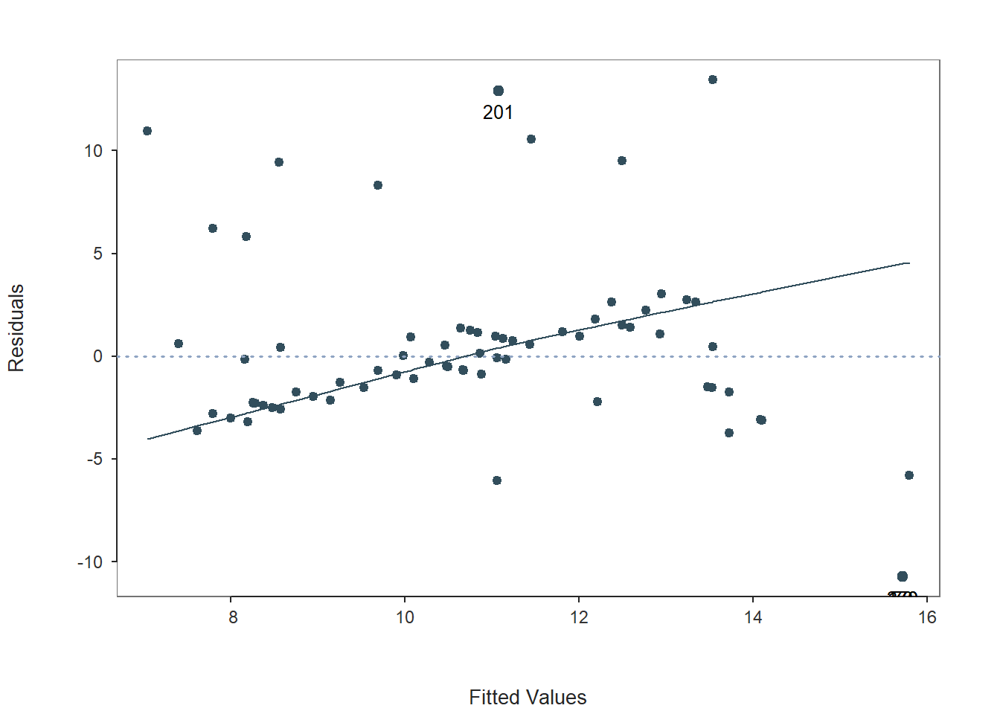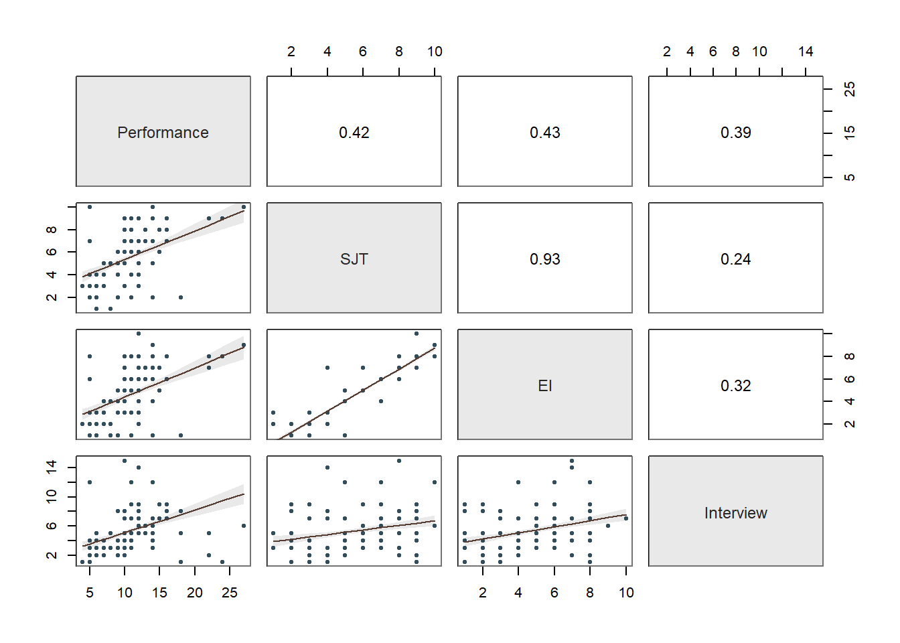
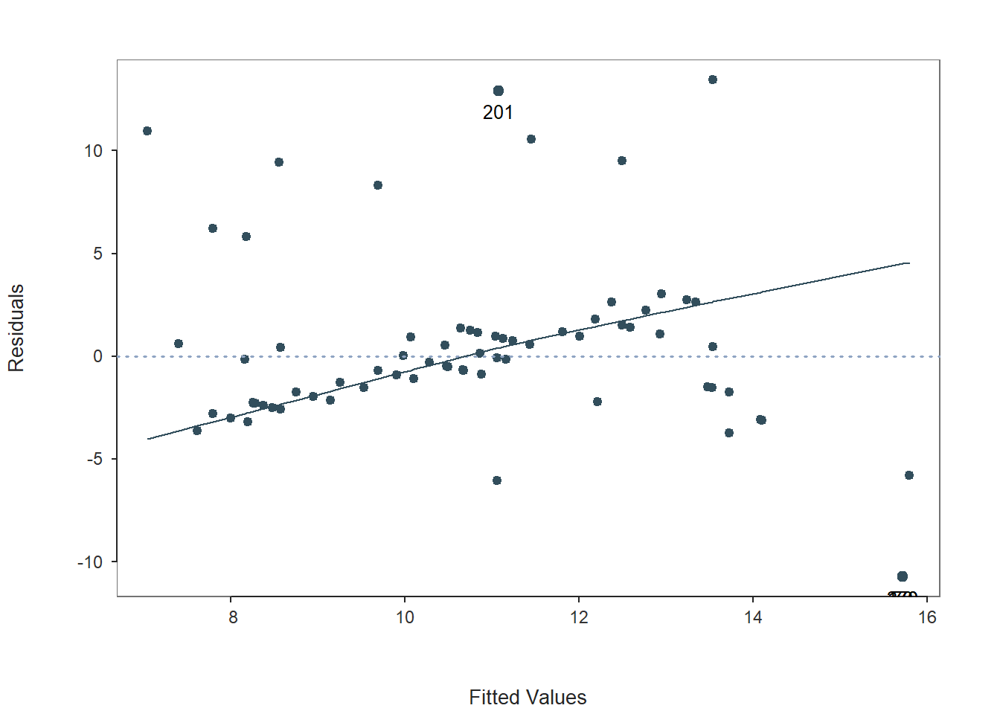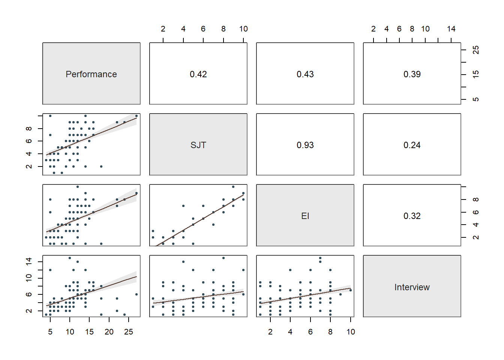
## >>> Suggestion
## # Create an R markdown file for interpretative output with Rmd = "file_name"
## Regression(my_formula=Performance ~ SJT + EI + Interview, data=df, Rmd="eg")
##
## BACKGROUND
##
## Data Frame: df
##
## Response Variable: Performance
## Predictor Variable 1: SJT
## Predictor Variable 2: EI
## Predictor Variable 3: Interview
##
## Number of cases (rows) of data: 300
## Number of cases retained for analysis: 300
##
## BASIC ANALYSIS
##
## Estimate Std Err t-value p-value Lower 95% Upper 95%
## (Intercept) 5.602 0.574 9.756 0.000 4.472 6.732
## SJT 0.485 0.231 2.099 0.037 0.030 0.939
## EI 0.091 0.237 0.385 0.700 -0.376 0.559
## Interview 0.378 0.067 5.686 0.000 0.247 0.509
##
## Standard deviation of Performance: 3.477
##
## Standard deviation of residuals: 2.996 for 296 degrees of freedom
## 95% range of residual variation: 11.794 = 2 * (1.968 * 2.996)
##
## R-squared: 0.265 Adjusted R-squared: 0.257 PRESS R-squared: 0.233
##
## Null hypothesis of all 0 population slope coefficients:
## F-statistic: 35.507 df: 3 and 296 p-value: 0.000
##
## df Sum Sq Mean Sq F-value p-value
## SJT 1 629.432 629.432 70.101 0.000
## EI 1 36.702 36.702 4.088 0.044
## Interview 1 290.301 290.301 32.331 0.000
##
## Model 3 956.435 318.812 35.507 0.000
## Residuals 296 2657.762 8.979
## Performance 299 3614.197 12.088
##
## K-FOLD CROSS-VALIDATION
##
## RELATIONS AMONG THE VARIABLES
##
## Performance SJT EI Interview
## Performance 1.00 0.42 0.43 0.39
## SJT 0.42 1.00 0.93 0.24
## EI 0.43 0.93 1.00 0.32
## Interview 0.39 0.24 0.32 1.00
##
## Tolerance VIF
## SJT 0.127 7.887
## EI 0.121 8.278
## Interview 0.873 1.146
##
## SJT EI Interview R2adj X's
## 1 0 1 0.259 2
## 1 1 1 0.257 3
## 0 1 1 0.249 2
## 1 1 0 0.179 2
## 0 1 0 0.178 1
## 1 0 0 0.171 1
## 0 0 1 0.150 1
##
## [based on Thomas Lumley's leaps function from the leaps package]
##
##
## RESIDUALS AND INFLUENCE
##
## Data, Fitted, Residual, Studentized Residual, Dffits, Cook's Distance
## [sorted by Cook's Distance]
## [res_rows = 20, out of 300 rows of data, or do res_rows="all"]
## ---------------------------------------------------------------------------
## SJT EI Interview Performance fitted resid rstdnt dffits cooks
## 201 9.000 8.000 1.000 24.000 11.074 12.926 4.516 0.765 0.137
## 70 10.000 8.000 12.000 5.000 15.720 -10.720 -3.728 -0.753 0.136
## 170 10.000 8.000 12.000 5.000 15.720 -10.720 -3.728 -0.753 0.136
## 270 10.000 8.000 12.000 5.000 15.720 -10.720 -3.728 -0.753 0.136
## 233 10.000 9.000 6.000 27.000 13.542 13.458 4.693 0.654 0.100
## 1 9.000 8.000 2.000 22.000 11.452 10.548 3.634 0.556 0.074
## 101 9.000 8.000 2.000 22.000 11.452 10.548 3.634 0.556 0.074
## 69 2.000 1.000 1.000 18.000 7.041 10.959 3.772 0.505 0.061
## 169 2.000 1.000 1.000 18.000 7.041 10.959 3.772 0.505 0.061
## 92 8.000 7.000 15.000 10.000 15.794 -5.794 -1.989 -0.437 0.047
## 192 8.000 7.000 15.000 10.000 15.794 -5.794 -1.989 -0.437 0.047
## 292 8.000 7.000 15.000 10.000 15.794 -5.794 -1.989 -0.437 0.047
## 20 2.000 1.000 8.000 18.000 9.689 8.311 2.837 0.422 0.044
## 120 2.000 1.000 8.000 18.000 9.689 8.311 2.837 0.422 0.044
## 283 9.000 7.000 5.000 22.000 12.496 9.504 3.249 0.418 0.042
## 269 2.000 1.000 5.000 18.000 8.554 9.446 3.225 0.385 0.036
## 97 2.000 1.000 3.000 14.000 7.797 6.203 2.096 0.248 0.015
## 197 2.000 1.000 3.000 14.000 7.797 6.203 2.096 0.248 0.015
## 297 2.000 1.000 3.000 14.000 7.797 6.203 2.096 0.248 0.015
## 82 2.000 1.000 4.000 14.000 8.176 5.824 1.966 0.230 0.013
##
## PREDICTION ERROR
##
## Data, Predicted, Standard Error of Forecast,
## 95% Prediction Intervals
## [sorted by lower bound of prediction interval]
## [to see all intervals do pred_rows="all"]
## ----------------------------------------------
##
## SJT EI Interview Performance pred sf pi.lwr pi.upr width
## 69 2.000 1.000 1.000 18.000 7.041 3.023 1.092 12.990 11.898
## 169 2.000 1.000 1.000 18.000 7.041 3.023 1.092 12.990 11.898
## 41 1.000 2.000 3.000 8.000 7.404 3.052 1.398 13.410 12.012
## ...
## 210 8.000 7.000 2.000 10.000 10.876 3.021 4.930 16.822 11.892
## 4 6.000 5.000 5.000 11.000 10.859 3.002 4.951 16.766 11.815
## 47 6.000 5.000 5.000 11.000 10.859 3.002 4.951 16.766 11.815
## ...
## 225 7.000 6.000 9.000 16.000 12.948 3.011 7.022 18.874 11.852
## 28 4.000 7.000 14.000 12.000 13.477 3.149 7.278 19.675 12.396
## 128 4.000 7.000 14.000 12.000 13.477 3.149 7.278 19.675 12.396
##
## ----------------------------------
## Plot 1: Distribution of Residuals
## Plot 2: Residuals vs Fitted Values
## Plot 3: ScatterPlot Matrix
## ----------------------------------By default, the output for the Regression function produces three plots that are useful for assessing statistical assumptions and for interpreting the results, as well as text output.
Let’s begin by reviewing the first two plots depicting the residuals and the section of the text called Residuals and Influence. Let’s take a look at the second plot in your Plot window; you may need to hit the back arrow button to review the three plots.
Fitted Values & Residuals Plot: The second plot is scatterplot that shows the association between the fitted values (x-axis) and the residuals (y-axis). If you recall, the residuals are the error in our estimates – or in other words, how much our predicted values for the outcome variable deviate from the observed (actual) values for the outcome variable. The term “fitted values” is another way of saying predicted values for the outcome variable. The horizontal dotted line is drawn at the residual value of zero; remember, our goal is to minimize the size of residuals (i.e., error). The solid line shows the deviations from zero of the residuals for each fitted value, and the greater the solid line deviates from the dotted line, the more likely that (a) variances of the residuals may not be equal for across levels of the predictor variables (violation of the assumption of homoscedasticity), (b) the average residual error value may not be zero for all levels of the predictor variable, and (c) there may be potential multivariate outliers influencing the fitted (predicted) values. In this plot, we can see that the variances of the residuals seem to deviate slightly from zero, which may indicate some degree of heteroscedasticity, and one case that is flagged as a potential multivariate outlier (case associated with row number 201). This case was flagged based on an outlier/influence statistic called Cook’s distance (D). So we may have a slight violation of the homscedasticity of residuals assumption.
Residuals & Influence Output: Moving to the text output section called Residuals and Influence, we see a table with a unique identifiers column (that shows the row number in your data frame object), the observed (actual) predictor and outcome variable values, the fitted (predicted) outcome variable values, the residual (error) between the fitted values and the observed outcome variable values, and the following three outlier/influence statistics: (a) studentized residual (rstdnt), (b) number of standard error units that a fitted value shifts when the flagged case is removed (dffits), and (c) Cook’s distance (cooks). Corroborating what we saw in the plot, the case associated with row number 201 has the highest Cook’s distance value (.137), followed closely by the cases associated with row numbers 70, 170, and 270. There are several different rules of thumbs for what constitutes an extreme Cook’s distance value. One common approach is to determine the threshold by dividing 4 by the sample size. There is, however, an even more liberal cutoff, which is simply 1 (Bollen and Jackman 1985). None of our Cook’s distance values exceed 1, where values in excess of 1 would indicate a problematic case. Regardless, as a sensitivity analysis, we would perhaps want to estimate our model once more after removing the cases associated with row number 201, 70, 170, and 270 from our data frame. Overall, we may have found what seems to be four potentially influential multivariate outlier cases, and we should be a bit concerned about satisfying the homoscedasticity of residuals, as the average residuals deviated slightly from zero. It’s possible that removing the four aforementioned cases might also help to address the slight violation of the homoscedasticity of residuals assumption. Next, let’s consider the following statistical assumption: Residual errors are normally distributed for each level of the predictor variable.
Distribution of Residuals Plot: Moving on to the first plot, which displays the distribution of the residuals, we can use the display to determine whether or not we have satisfied the statistical assumption that the residuals are normally distributed. We see a histogram and density distribution of our residuals with the shape of a normal distribution superimposed. As you can see, our residuals show a mostly normal distribution, which is great and in line with the assumption.
Collinearity: Moving onto the third diagnostic plot containing the scatterplot matrix, let’s see if we might have any collinearity concerns. Specifically, let’s focus in on the correlations between the predictor variables (i.e., selection tool variables), as these can be indicators of whether collinearity might be of concern in this model. The correlation between SJT and Interview is .24, and the correlation between Interview and EI is .32 – both of which are acceptable from a collinearity perspective. In contrast, the correlation between SJT and EI is HUGE at .93. Generally speaking, a correlation that is .85 or higher can indicate that two variables are practically indistinguishable from one another, and here the correlation between SJT and EI is a whopping .93! These two selection tools seem to be measuring the same thing and are mostly redundant aside from some likely measurement error.
To further explore potential collinearity in a different way, let’s check out the table in our text output called Collinearity. The corresponding table shows two indices of collinearity: tolerance and valence inflation factor (VIF). Because the VIF is just the reciprocal of the tolerance (i.e., 1/tolerance), let’s focus just on the tolerance statistic. The tolerance statistic is computed based on the shared variance (R2) of just the predictor variables in a single model (excluding the outcome variable) and subtracting that value from 1 (1 - R2), where a focal predictor variable serves as the outcome and the other(s) (collectively) explain variance in that predictor variable. We typically get concerned about collinearity when the tolerance statistics falls below .20, with a tolerance of .00 being the worst and thus the strongest level of collinearity. Ideally, we want the tolerance statistic to approach 1.00, as this indicates that there are lower levels of collinearity. In the table, we can see that SJT has a tolerance statistic of .127, which is lower than .20 and indicates that SJT overlaps considerably with the other predictor variables (EI, Interview) in the model in terms of shared variance. Similarly, EI has a troublesome tolerance statistic of .121, which suggests a similar problem. The tolerance for Interview is .873, which suggests low levels of collinearity (which is a good thing). Because SJT and EI both have low tolerance statistics, in this situation, we can deduce that they must be the collinearity culprits. And this corroborates what we saw in the correlation matrix (see above). As such, in the current model, we definitely have a collinearity problem.
Summary of Statistical Assumptions Tests: Given the apparent slight violation of the assumption of homoscedasticity, the four potential multivariate outlier cases (i.e., 201, 70, 170, and 270, which correspond to EmployeeID values of EE223, EE92, EE292, EE192, respectively), and the very concerning levels of collinearity involving our SJT and EI variables, we should avoid interpreting the model as currently specified. In fact, we should at the very least remove either the SJT or EI predictor variable from the model to address the most concerning statistical assumption violation. So how do we determine which selection tool to retain? Well, that depends on a number of practical factors. For example, we would likely be concerned with the amount of resources (e.g., time, money) it requires to administer each of these selection tools, and given that they are apparently redundant, we might go with the least resource-intensive tool. In addition, we might consider applicants’ reactions to each of the tools. If applicants tend to dislike one of the tools or perceive it as unfair, then that one might be a candidate for removal. As another consideration, we might review whether one of these tools results in adverse (disparate) impact, but given there high correlation, if one results in adverse impact, then the other most certainly will too. For the sake of this tutorial, let’s assume that we have a compelling reason for dropping EI and retaining SJT.
Re-Specify Model to Address Collinearity Issue: Given our decision to drop EI as a selection tool due to a severe violation of the collinearity assumption (see above), let’s re-specify and re-estimate our multiple linear regression model with just SJT and Interview as predictor variables.
# Re-estimate multiple linear regression model
# (with EI variable dropped due to collinearity)
Regression(Performance ~ SJT + Interview, data=df) 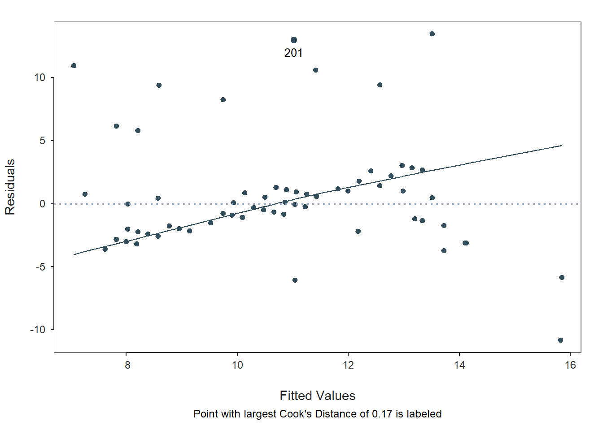
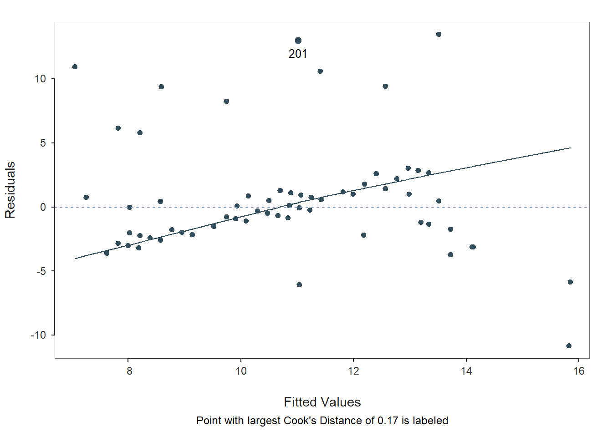
## >>> Suggestion
## # Create an R markdown file for interpretative output with Rmd = "file_name"
## Regression(my_formula=Performance ~ SJT + Interview, data=df, Rmd="eg")
##
## BACKGROUND
##
## Data Frame: df
##
## Response Variable: Performance
## Predictor Variable 1: SJT
## Predictor Variable 2: Interview
##
## Number of cases (rows) of data: 300
## Number of cases retained for analysis: 300
##
## BASIC ANALYSIS
##
## Estimate Std Err t-value p-value Lower 95% Upper 95%
## (Intercept) 5.527 0.539 10.249 0.000 4.465 6.588
## SJT 0.567 0.085 6.714 0.000 0.401 0.734
## Interview 0.385 0.064 6.031 0.000 0.260 0.511
##
## Standard deviation of Performance: 3.477
##
## Standard deviation of residuals: 2.992 for 297 degrees of freedom
## 95% range of residual variation: 11.777 = 2 * (1.968 * 2.992)
##
## R-squared: 0.264 Adjusted R-squared: 0.259 PRESS R-squared: 0.236
##
## Null hypothesis of all 0 population slope coefficients:
## F-statistic: 53.339 df: 2 and 297 p-value: 0.000
##
## df Sum Sq Mean Sq F-value p-value
## SJT 1 629.432 629.432 70.303 0.000
## Interview 1 325.670 325.670 36.375 0.000
##
## Model 2 955.102 477.551 53.339 0.000
## Residuals 297 2659.095 8.953
## Performance 299 3614.197 12.088
##
## K-FOLD CROSS-VALIDATION
##
## RELATIONS AMONG THE VARIABLES
##
## Performance SJT Interview
## Performance 1.00 0.42 0.39
## SJT 0.42 1.00 0.24
## Interview 0.39 0.24 1.00
##
## Tolerance VIF
## SJT 0.944 1.060
## Interview 0.944 1.060
##
## SJT Interview R2adj X's
## 1 1 0.259 2
## 1 0 0.171 1
## 0 1 0.150 1
##
## [based on Thomas Lumley's leaps function from the leaps package]
##
##
## RESIDUALS AND INFLUENCE
##
## Data, Fitted, Residual, Studentized Residual, Dffits, Cook's Distance
## [sorted by Cook's Distance]
## [res_rows = 20, out of 300 rows of data, or do res_rows="all"]
## ---------------------------------------------------------------------
## SJT Interview Performance fitted resid rstdnt dffits cooks
## 201 9.000 1.000 24.000 11.019 12.981 4.537 0.736 0.169
## 70 10.000 12.000 5.000 15.825 -10.825 -3.755 -0.670 0.143
## 170 10.000 12.000 5.000 15.825 -10.825 -3.755 -0.670 0.143
## 270 10.000 12.000 5.000 15.825 -10.825 -3.755 -0.670 0.143
## 233 10.000 6.000 27.000 13.513 13.487 4.709 0.645 0.129
## 1 9.000 2.000 22.000 11.404 10.596 3.653 0.537 0.092
## 101 9.000 2.000 22.000 11.404 10.596 3.653 0.537 0.092
## 69 2.000 1.000 18.000 7.047 10.953 3.775 0.505 0.081
## 169 2.000 1.000 18.000 7.047 10.953 3.775 0.505 0.081
## 92 8.000 15.000 10.000 15.846 -5.846 -2.008 -0.430 0.061
## 192 8.000 15.000 10.000 15.846 -5.846 -2.008 -0.430 0.061
## 292 8.000 15.000 10.000 15.846 -5.846 -2.008 -0.430 0.061
## 20 2.000 8.000 18.000 9.744 8.256 2.819 0.397 0.051
## 120 2.000 8.000 18.000 9.744 8.256 2.819 0.397 0.051
## 283 9.000 5.000 22.000 12.560 9.440 3.226 0.372 0.045
## 269 2.000 5.000 18.000 8.588 9.412 3.216 0.371 0.045
## 97 2.000 3.000 14.000 7.817 6.183 2.092 0.245 0.020
## 197 2.000 3.000 14.000 7.817 6.183 2.092 0.245 0.020
## 297 2.000 3.000 14.000 7.817 6.183 2.092 0.245 0.020
## 82 2.000 4.000 14.000 8.203 5.797 1.959 0.224 0.017
##
## PREDICTION ERROR
##
## Data, Predicted, Standard Error of Forecast,
## 95% Prediction Intervals
## [sorted by lower bound of prediction interval]
## [to see all intervals do pred_rows="all"]
## ----------------------------------------------
##
## SJT Interview Performance pred sf pi.lwr pi.upr width
## 69 2.000 1.000 18.000 7.047 3.018 1.107 12.987 11.880
## 169 2.000 1.000 18.000 7.047 3.018 1.107 12.987 11.880
## 41 1.000 3.000 8.000 7.250 3.021 1.305 13.195 11.891
## ...
## 210 8.000 2.000 10.000 10.837 3.015 4.903 16.771 11.868
## 4 6.000 5.000 11.000 10.858 2.998 4.959 16.757 11.798
## 47 6.000 5.000 11.000 10.858 2.998 4.959 16.757 11.798
## ...
## 222 9.000 9.000 11.000 14.102 3.015 8.168 20.035 11.867
## 92 8.000 15.000 10.000 15.846 3.057 9.829 21.862 12.033
## 192 8.000 15.000 10.000 15.846 3.057 9.829 21.862 12.033
##
## ----------------------------------
## Plot 1: Distribution of Residuals
## Plot 2: Residuals vs Fitted Values
## Plot 3: ScatterPlot Matrix
## ----------------------------------In a real-world situation, we would once again work through the statistical assumption tests that we did above; however, for sake of brevity, we will assume that the statistical assumptions have been reasonably satisfied in this re-specified model in which only the SJT and Interview variables are included as predictors. Thus, we will feel confident that we can interpret our statistical tests, confidence intervals, and prediction intervals in a meaningful way, beginning with the Background section of the output.
39.2.4.2 Interpret Multiple Linear Regression Model Results
Background: The Background section of the text output section shows which data frame object was used to estimate the model, the name of the response (outcome, criterion) variable, and the name of the predictor variable. In addition, it shows the number of cases in the data frame as well as how many were used in the estimation of the model; by default, the Regression function uses listwise deletion when one or more of the variables in the model has a missing value, which means that a case with any missing value on one of the focal variables is removed as part of the analysis. Here we can see that all 300 cases in the data frame were retained for the analysis, which means that none of the variables in the model had any missing values.
Basic Analysis: The Basic Analysis section of the output first displays a table containing the estimated regression model (Estimated Model for [INSERT OUTCOME VARIABLE NAME]), including the regression coefficients (slopes, weights) and their standard errors, t-values, p-values, and lower and upper limits of their 95% confidence intervals. Typically, the intercept value and its significance test are not of interest, unless we wish to use the value to specify the regression model equation (more on that later). The regression coefficients associated with the predictor variables (SJT and Interview) in relation to the outcome variable (Performance) are, however, of substantive interest. Here, we see that the unstandardized regression coefficient for SJT is .567, and its associated p-value is less than .001 (b = .567, p < .001). [NOTE: Because the regression coefficient is unstandardized, its practical significance cannot be directly interpreted, and it is not a standardized effect size like a correlation coefficient.] Given that the p-value is less than our conventional two-tailed alpha level of .05, we reject the null hypothesis that the regression coefficient is equal to zero, which means that we conclude that the regression coefficient is statistically significantly different from zero when statistically controlling for the effects of Interview. Further, the 95% confidence interval ranges from .401 to .734 (i.e., 95% CI[.401, .734]), which indicates that the true population parameter for the association likely falls somewhere between those two values. We can interpret the significant regression coefficient as follows: For every one point increase in situational judgment test (SJT) scores, job performance (Performance) scores increase by .567 points when controlling for the effect of structured interview (Interview) scores. Next, the unstandardized regression coefficient for Interview is .385, and its associated p-value is less than .001 (b = .385, p < .001). Given that the p-value is less than our conventional two-tailed alpha level of .05, we reject the null hypothesis that the regression coefficient is equal to zero, which means that we conclude that the regression coefficient is statistically significantly different from zero when statistically controlling for the effects of SJT. Further, the 95% confidence interval ranges from .260 to .511 (i.e., 95% CI[.260, .511]), which indicates that the true population parameter for the association likely falls somewhere between those two values. We can interpret the significant regression coefficient as follows: For every one point increase in structured interview (Interview) scores, job performance (Performance) scores increase by .385 points when controlling for the effect of situational judgment test (SJT) scores.
Using the intercept and predictor variable coefficient estimates from our multiple linear regression model, we can write out the equation for the regression model as follows:
\(Performance_{predicted} = 5.527 + (.567 * SJT_{observed}) + (.385 * Interview_{observed})\)
Let’s assume, for example, that a future applicant scores 5 points on the SJT and 7 points on the Interview. If we plug those values into our equation, we get a predictor criterion score (i.e., Performance score) of 11.057:
\(11.057 = 5.527 + (.567 * 5) + (.385 * 7)\)
Thus, based on our estimate model (i.e., equation), we are able to predict scores on the criterion variable Performance – something we’ll cover in greater depth in the next chapter.
The Model Fit section of the output appears below the table containing the regression coefficient estimates. In this section, you will find the (unadjusted) R-squared (R2) estimate, which is an indicator of the model’s fit to the data as well as the extent to which the predictor variable explains variance (i.e., variability) in the outcome variable. The R-squared (R2) value of .264 indicates the extent to which the predictor variables collectively explain variance in the outcome variable in this sample – or in other words, how much errors are minimized in the sample given the specified model; if you multiply the value by 100, you get a percentage. In this case, we find that 26.4% of the variance in Performance is explained by SJT and Interview collectively. You can also think of the R2 values as effect sizes (i.e., indicators of practical significance) at the model level. Here are some rules of thumb for qualitatively interpreting the magnitude of the R2 effect size, which is another way of saying “determining the level of practical significance”:
| R2 | Description |
|---|---|
| .01 | Small |
| .09 | Medium |
| .25 | Large |
The raw, unadjusted R-squared (R2) value, however, is sensitive to the sample size and the number of predictor variables in the model. The adjusted R2 value corrects for the sample size relative to the number of predictor variables in the model, which results in a lower estimate than its unadjusted counterpart. The adjusted R2 is a better indicator of the magnitude of the association in the underlying population and thus tends to be more accurate. Here we see that the adjusted R2 value is slightly smaller at .259 (or 25.9%). If space permits, it’s a good idea to report both values, but given how close the unadjusted and adjusted R2 estimates tend to be, reporting and interpreting just the unadjusted R2 is usually fine – and is typically customary.
The Model Fit section also contains the sum of squares, F-value, and p-value includes detailed information about overall model fit, which was estimated using ordinary least squares (OLS).. In this table, we are mostly interested in the F-value and its associated p-value, as it indicates whether the estimated model fits the data significantly better than the null model, where the null model does not include any predictor variables. In other words, the F-value and p-value are associated with the R2 value and whether the unadjusted and adjusted R2 values are significantly different from zero. In this example, we see that the F-value is 45.317 and that its associated p-value is less than .001 – the latter of which is less than our conventional alpha level of .05. Thus, we reject the null hypothesis that the R2 values are equal to zero, which leads us to conclude that the estimated model outperforms a model with no predictor variables. Again, you can think of the R2 value as an indicator of effect size at the model level, and in the table above, you will find the conventional thresholds for qualitatively describing a small, medium, or large R2 value.
Relations Among the Variables: The section called Relations Among the Variables displays the zero-order (Pearson product-moment) correlation between the predictor variable and outcome variable. This correlation can be used to gauge the effect size of a predictor variable in relation to the outcome variable, as a correlation coefficient is a standardized metric that can be compared across samples - unlike an unstandardized regression coefficient; however, it’s important to note that such a correlation represents a bivariate (i.e., two-variable) association – and thus doesn’t involve statistical control like our multiple linear regression model.
Collinearity: The Colinearity section displays the tolerance statistics. As you can see, both tolerance statistics are .944 and thus close to 1.00, which indicates very low levels of collinearity. We would be concerned if a tolerance statistic fell below .20, which is not the case for this model when applied to this sample of employees.
Prediction Error: In the output section called Prediction Error, information about the forecasting error and prediction intervals. This section moves us toward what would be considered true predictive analytics and machine learning; however, because we only have a single dataset to train our model and test it, we’re not performing true predictive analytics. As such, we won’t pay much attention to interpreting this section of the output in this tutorial. With that said, if you’re curious, feel free to read on. When performing true predictive analytics, we typically divide our data into at least two datasets. Often, we have at least one training dataset that we use to “train” or estimate a given model; often, we have more than one training dataset, though. After training the model on one or more training datasets, we then evaluate the model on a test dataset that should contain data from an entirely different set of cases than the training dataset(s). As a more rigorous approach, we can instead use a validation dataset to evaluate the training dataset(s), and after we’ve picked the model that performs best on the validation set, we then pass the model along to the test dataset to see if we can confirm the results. What lessR is doing in the Prediction Error section is taking the model you estimated using the focal dataset, which we could call our training dataset, and then it takes the values for our predictor and outcome variables from our sample and plugs them into the model and accounts for forecasting error for each set of values. Specifically, the standard error of forecast (sf) for each set of values is base on a combination of the standard deviation of the residuals for the entire model (modeling error) and the sampling error for the value on the regression line. Consequently, each set of values is assigned a lower and upper bound of a prediction interval for the outcome variable. The width of the prediction interval is specific to the values used to test the model, so the widths vary across the values. In fact, the further one gets from the mean of the outcome variable (in either direction), the wider the prediction intervals become. The 95% prediction intervals, along with the 95% confidence intervals and regression line of best fit, are plotted on the third and final plot of the function output. As you can, see the prediction intervals are the outermost lines as they include both sampling error and the modeling error, whereas the confidence intervals are the inner lines, as they reflect just the sampling error.
Sample Technical Write-Up of Results: A concurrent validation study was conducted to evaluate whether evidence of incremental validities existed for a situational judgment test (SJT), an emotional intelligence assessment (EI), and a structured interview (Interview) in relation to job performance (Performance). An initial multiple linear regression model was estimated with all three selection tools included as predictor variables and job performance specified as the criterion (i.e., outcome) variable. Due to very high collinearity (i.e., a very high correlation) associated with the situational judgment test and the emotional intelligence assessment, we made the decision to drop the emotional intelligence assessment, as it was more expensive to administer and overlapped with the situational judgment test in terms of assessed content. In a follow-up multiple linear regression model, only the situational judgment test and structured interview variables were included as predictor variables. In this model, we found that each of the these selection tools showed evidence of incremental validity in relation to the criterion of job performance. Specifically, when statistically controlling for the effect of structure interview scores, model results indicated that scores on the situational judgment test were positively associated with job performance scores and to a statistically significant extent (b = .567, p < .001). In other words, controlling for the effect of the structured interview, for every one point increase in situational judgment test scores, job performance increased by .567 points. Further, when statistically controlling for the effect of situational judgment test scores, model results indicated that scores on the structured interview were positively associated with job performance scores and to a statistically significant extent (b = .385, p < .001). In other words, controlling for the effect of the situational judgment test, for every one point increase in structured interview scores, job performance increased by .385 points. Collectively, scores on the situational judgment test and the structured interview explained 26.4% of the variance in the criterion of job performance (R2 = .264), which can be described as a large amount of variance explained by the model. In sum, of the three selection tools, the situational judgment test and the structured interview showed the most promise, as they showed acceptable levels of collinearity and evidence of incremental validity with respect to the criterion.
39.2.4.3 Optional: Obtaining Standardized Coefficients
As an optional detour, if you would like to estimate the same simple linear regression model but view the standardized regression coefficients, simply add the argument new_scale="z" to your previous Regression function; that argument rescales your outcome and predictor variables to z-scores prior to estimating the model, which in effect produces standardized coefficients.
# Estimate multiple linear regression model with standardized coefficients
Regression(Performance ~ SJT + EI, data=df,
new_scale="z")##
## Rescaled Data, First Six Rows
## Performance SJT EI
## 1 3.240 1.632 1.609
## 2 0.076 1.158 0.657
## 3 -1.650 0.683 0.657
## 4 0.076 0.209 0.181
## 5 0.363 0.209 0.181
## 6 0.363 -0.266 0.181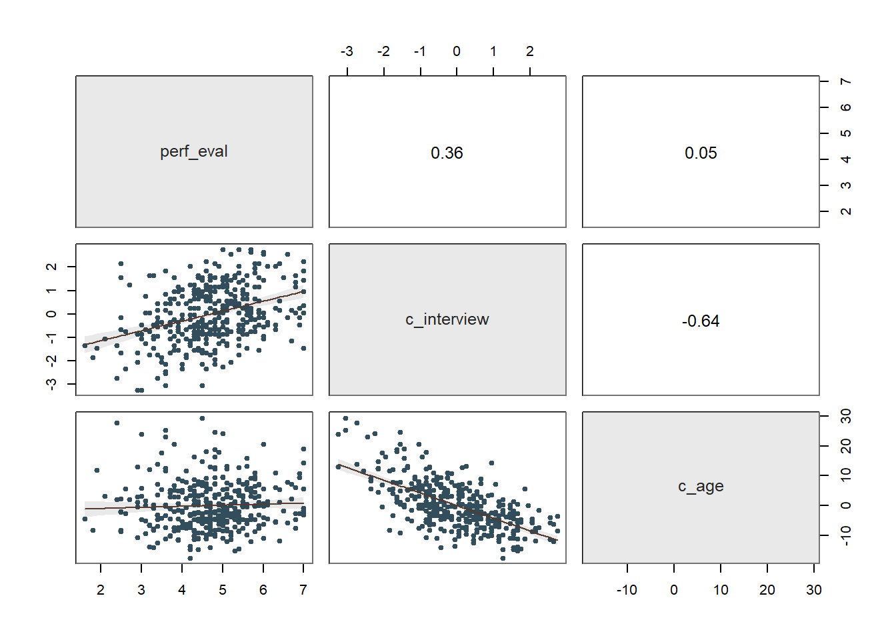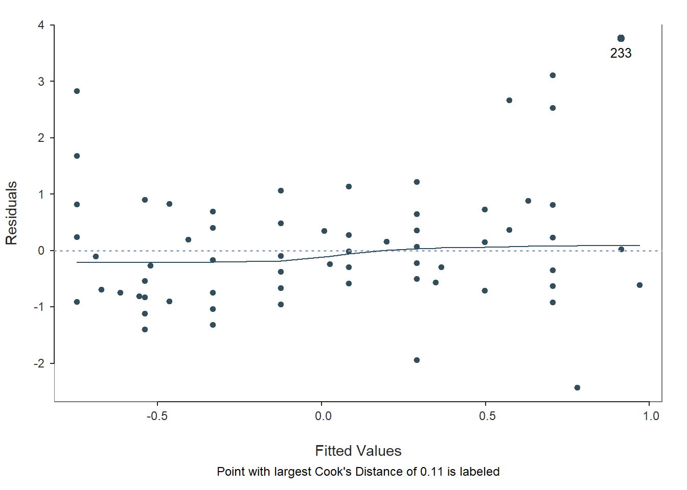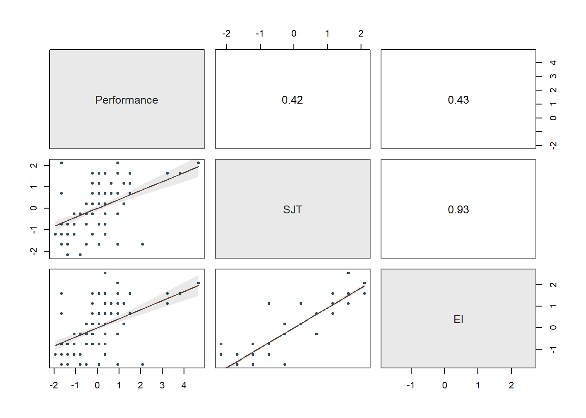
## >>> Suggestion
## # Create an R markdown file for interpretative output with Rmd = "file_name"
## Regression(my_formula=Performance ~ SJT + EI, data=df, new_scale="z", Rmd="eg")
##
## BACKGROUND
##
## Data Frame: df
##
## Response Variable: Performance
## Predictor Variable 1: SJT
## Predictor Variable 2: EI
##
## Number of cases (rows) of data: 300
## Number of cases retained for analysis: 300
##
## Data are Standardized
##
## BASIC ANALYSIS
##
## Estimate Std Err t-value p-value Lower 95% Upper 95%
## (Intercept) -0.000 0.052 -0.000 1.000 -0.103 0.103
## SJT 0.158 0.145 1.089 0.277 -0.127 0.443
## EI 0.278 0.145 1.919 0.056 -0.007 0.564
##
## Standard deviation of Performance: 1.000
##
## Standard deviation of residuals: 0.906 for 297 degrees of freedom
## 95% range of residual variation: 3.567 = 2 * (1.968 * 0.906)
##
## R-squared: 0.184 Adjusted R-squared: 0.179 PRESS R-squared: 0.165
##
## Null hypothesis of all 0 population slope coefficients:
## F-statistic: 33.551 df: 2 and 297 p-value: 0.000
##
## df Sum Sq Mean Sq F-value p-value
## SJT 1 52.079 52.079 63.418 0.000
## EI 1 3.024 3.024 3.683 0.056
##
## Model 2 55.104 27.552 33.551 0.000
## Residuals 297 243.898 0.821
## Performance 299 299.002 1.000
##
## K-FOLD CROSS-VALIDATION
##
## RELATIONS AMONG THE VARIABLES
##
## Performance SJT EI
## Performance 1.00 0.42 0.43
## SJT 0.42 1.00 0.93
## EI 0.43 0.93 1.00
##
## Tolerance VIF
## SJT 0.131 7.655
## EI 0.131 7.655
##
## SJT EI R2adj X's
## 1 1 0.179 2
## 0 1 0.178 1
## 1 0 0.171 1
##
## [based on Thomas Lumley's leaps function from the leaps package]
##
##
## RESIDUALS AND INFLUENCE
##
## Data, Fitted, Residual, Studentized Residual, Dffits, Cook's Distance
## [sorted by Cook's Distance]
## [res_rows = 20, out of 300 rows of data, or do res_rows="all"]
## -----------------------------------------------------------------
## SJT EI Performance fitted resid rstdnt dffits cooks
## 233 2.107 2.086 4.678 0.913 3.765 4.316 0.594 0.111
## 70 2.107 1.609 -1.650 0.780 -2.430 -2.741 -0.405 0.054
## 170 2.107 1.609 -1.650 0.780 -2.430 -2.741 -0.405 0.054
## 270 2.107 1.609 -1.650 0.780 -2.430 -2.741 -0.405 0.054
## 201 1.632 1.609 3.815 0.705 3.110 3.519 0.395 0.050
## 283 1.632 1.133 3.240 0.573 2.667 3.007 0.385 0.048
## 20 -1.689 -1.724 2.089 -0.746 2.835 3.199 0.373 0.045
## 69 -1.689 -1.724 2.089 -0.746 2.835 3.199 0.373 0.045
## 120 -1.689 -1.724 2.089 -0.746 2.835 3.199 0.373 0.045
## 169 -1.689 -1.724 2.089 -0.746 2.835 3.199 0.373 0.045
## 269 -1.689 -1.724 2.089 -0.746 2.835 3.199 0.373 0.045
## 1 1.632 1.609 3.240 0.705 2.535 2.848 0.320 0.033
## 101 1.632 1.609 3.240 0.705 2.535 2.848 0.320 0.033
## 31 -2.164 -0.771 -1.362 -0.556 -0.806 -0.916 -0.229 0.017
## 131 -2.164 -0.771 -1.362 -0.556 -0.806 -0.916 -0.229 0.017
## 231 -2.164 -0.771 -1.362 -0.556 -0.806 -0.916 -0.229 0.017
## 82 -1.689 -1.724 0.939 -0.746 1.685 1.881 0.220 0.016
## 97 -1.689 -1.724 0.939 -0.746 1.685 1.881 0.220 0.016
## 182 -1.689 -1.724 0.939 -0.746 1.685 1.881 0.220 0.016
## 197 -1.689 -1.724 0.939 -0.746 1.685 1.881 0.220 0.016
##
## PREDICTION ERROR
##
## Data, Predicted, Standard Error of Forecast,
## 95% Prediction Intervals
## [sorted by lower bound of prediction interval]
## [to see all intervals do pred_rows="all"]
## ----------------------------------------------
##
## SJT EI Performance pred sf pi.lwr pi.upr width
## 20 -1.689 -1.724 2.089 -0.746 0.912 -2.542 1.049 3.591
## 40 -1.689 -1.724 -1.650 -0.746 0.912 -2.542 1.049 3.591
## 55 -1.689 -1.724 0.076 -0.746 0.912 -2.542 1.049 3.591
## ...
## 211 0.683 -0.295 -0.212 0.026 0.918 -1.782 1.833 3.615
## 4 0.209 0.181 0.076 0.083 0.908 -1.703 1.870 3.573
## 5 0.209 0.181 0.363 0.083 0.908 -1.703 1.870 3.573
## ...
## 294 0.209 0.181 -0.212 0.083 0.908 -1.703 1.870 3.573
## 28 -0.740 1.133 0.363 0.198 0.946 -1.664 2.061 3.724
## 128 -0.740 1.133 0.363 0.198 0.946 -1.664 2.061 3.724
##
## ----------------------------------
## Plot 1: Distribution of Residuals
## Plot 2: Residuals vs Fitted Values
## Plot 3: ScatterPlot Matrix
## ----------------------------------In the Estimated Model section of the output, note that the intercept value is zeroed out due to the standardization, and the regression coefficients associated with SJT and Interview are now in standardized units (\(\beta\) = .344, p < .001 and \(\beta\) = .309, p < .001, respectively). Note that the p-values are the same as the unstandardized regression coefficients we saw above. The interpretation of this statistically significant standardized regression coefficient is as follows: When statistically controlling for the effect of Interview, for every one standardized unit increase in SJT, Performance increases by .344 standardized units, and when statistically controlling for the effect of SJT, for every one standardized unit increase in Interview, Performance increases by .309 standardized units.
39.2.5 Summary
In this chapter, we learned how to estimate a multiple linear regression model using the Regression function from the lessR package in order to estimate whether evidence of incremental validity exists.
39.3 Chapter Supplement
In addition to the Regression function from the lessR package covered above, we can use the lm function from base R to estimate a multiple linear regression model. Because this function comes from base R, we do not need to install and access an additional package. In this supplement, you will also have an opportunity to learn how to make an APA (American Psychological Association) style table of regression results.
39.3.1 Functions & Packages Introduced
| Function | Package |
|---|---|
lm |
base R |
print |
base R |
vif |
car |
plot |
base R |
cooks.distance |
base R |
sort |
base R |
head |
base R |
summary |
base R |
confint |
base R |
cor |
base R |
scale |
base R |
apa.reg.table |
apaTables |
39.3.2 Initial Steps
If required, please refer to the Initial Steps section from this chapter for more information on these initial steps.
# Set your working directory
setwd("H:/RWorkshop")# Install readr package if you haven't already
# [Note: You don't need to install a package every
# time you wish to access it]
install.packages("readr")# Access readr package
library(readr)
# Read data and name data frame (tibble) object
df <- read_csv("ConcurrentValidation.csv")##
## -- Column specification ------------------------------------------------------------------------
## cols(
## EmployeeID = col_character(),
## SJT = col_double(),
## EI = col_double(),
## Interview = col_double(),
## Performance = col_double()
## )# Print the names of the variables in the data frame (tibble) objects
names(df)## [1] "EmployeeID" "SJT" "EI" "Interview" "Performance"# View variable type for each variable in data frame
str(df)## spec_tbl_df[,5] [300 x 5] (S3: spec_tbl_df/tbl_df/tbl/data.frame)
## $ EmployeeID : chr [1:300] "EE23" "EE24" "EE25" "EE26" ...
## $ SJT : num [1:300] 9 8 7 6 6 5 5 4 3 8 ...
## $ EI : num [1:300] 8 6 6 5 5 5 4 2 2 7 ...
## $ Interview : num [1:300] 2 3 4 5 6 7 7 8 9 2 ...
## $ Performance: num [1:300] 22 11 5 11 12 12 12 12 12 10 ...
## - attr(*, "spec")=
## .. cols(
## .. EmployeeID = col_character(),
## .. SJT = col_double(),
## .. EI = col_double(),
## .. Interview = col_double(),
## .. Performance = col_double()
## .. )# View first 6 rows of data frame
head(df)## # A tibble: 6 x 5
## EmployeeID SJT EI Interview Performance
## <chr> <dbl> <dbl> <dbl> <dbl>
## 1 EE23 9 8 2 22
## 2 EE24 8 6 3 11
## 3 EE25 7 6 4 5
## 4 EE26 6 5 5 11
## 5 EE27 6 5 6 12
## 6 EE28 5 5 7 1239.3.3 lm Function from Base R
In the following section, we will learn how to apply the lm function from base R to estimate a multiple linear regression model. Please note that we are doing some of the operations in a different order than what we did with the Regression function from lessR. Why? Well, the Regression function from lessR generates a number of diagnostics automatically (by default), and thus we took advantage of that in the previous section. With the lm function from base R, we have to piece together the diagnostics the old-fashioned way, which also happens to mean that we have more control over the order in which we do things.
As a critical first step, we must specify the regression model using the lm function. To use the lm (linear model) function, create a name for your regression model (reg.mod1) using the <- symbol. Next, type the name of the lm function. As the first argument, specify the regression model you wish to estimate. Specifically, type the name of the outcome variable (Performance) to the left of the ~ operator and the name of the predictor variables (SJT, EI, Interview) to the right of the ~ operator. We are telling the function to “regress Performance on SJT, EI, and Interview.” As the second argument, type data= followed by the name of the data frame object to which the variables in your model belong (df). Now we are ready to determine whether we have satisfied key statistical assumptions and, if so, review the summary of our model estimation results.
# Specify multiple linear regression model
reg.mod1 <- lm(Performance ~ SJT + EI + Interview, data=df)Note: You won’t see any output in your console by specifying the regression model above. If you print the model (reg.mod1) to your console using the print function from base R, you only get the regression coefficients (but no statistical tests or model fit information). Later on, we’ll apply a different function to obtain the full model results.
# Print very brief model information (NOT NECESSARY)
print(reg.mod1)##
## Call:
## lm(formula = Performance ~ SJT + EI + Interview, data = df)
##
## Coefficients:
## (Intercept) SJT EI Interview
## 5.60170 0.48470 0.09147 0.37827Now that we have specified our model, let’s see if we might have any worrisome collinearity among our predictors, which if you recall, a key statistical assumption is that the model is free of collinearity. Identifying problematic collinearity typically means we need to re-specify our model by perhaps dropping a predictor variable or two. Thus, let’s start with testing the assumption related to collinearity. Creating a correlation matrix is one great way to identify possible collinearity issues, so let’s start with a correlation matrix of the variables in our data frame. Let’s use the cor function from base R. Before doing, so let’s create a temporary data frame object (temp) in which we drop the EmployeeID variable from the original df data frame object; we need to do this because the cor function only accepts numeric variables, and the EmployeeID variable is non-numeric.
, and enter the name of our data frame as the sole argument. To learn more about how to remove variables, feel free to check out the chapter on filtering
# Create temporary data frame object
# with EmployeeID variable removed
temp <- subset(df, select=-EmployeeID)
# Create basic correlation matrix
cor(temp)## SJT EI Interview Performance
## SJT 1.0000000 0.9324020 0.2373394 0.4173192
## EI 0.9324020 1.0000000 0.3175592 0.4255306
## Interview 0.2373394 0.3175592 1.0000000 0.3906502
## Performance 0.4173192 0.4255306 0.3906502 1.0000000High correlations between pairs of predictor variables are indicative of high collinearity. The correlation between SJT and Interview is approximately .24, and the correlation between EI and Interview is .32, both of which are in the acceptable range. The correlation between SJT and EI is HUGE at .93. Generally speaking, a correlation that is .85 or higher can indicate that two predictors are practically distinguishable from one another, and here the correlation between SJT and EmotionalIntelligence is a whopping .93! These two selection tools seem to be measuring the same thing and are mostly redundant aside from some likely measurement error.
To further explore this collinearity issue, let’s estimate two indices of collinearity: tolerance and valence inflation factor (VIF). If you haven’t already, install the car package which contains the vif function we will use.
# Install car package if you haven't already
install.packages("car")Now, access the car package using the library function.
# Access car package
library(car)# Compute VIF statistic
vif(reg.mod1)## SJT EI Interview
## 7.887216 8.277683 1.145830Next, the tolerance statistic is just the reciprocal of the VIF (1/VIF), and generally, I find it to be easier to interpret because the tolerance statistic represents the shared variance (R2) of just the predictor variables in a single model (excluding the outcome variable) and subtracting that value from 1 (1 - R2), where a focal predictor variable serves as the outcome and the other(s) (collectively) explain variance in that predictor variable. We typically get concerned when the tolerance statistics approaches .20, as the closer it gets to .00, the higher the collinearity. Ideally, we want the tolerance statistic to approach 1.00, as this indicates that there are lower levels of collinearity. To compute the tolerance statistic, we just divide 1 by the VIF.
# Compute tolerance statistic
1 / vif(reg.mod1)## SJT EI Interview
## 0.1267875 0.1208068 0.8727299In the table, we can see that SJT has a tolerance statistic of .127, which is lower than .20 and indicates that SJT overlaps considerable with the other predictor variables (EI, Interview) in terms of shared variance. Similarly, the EI has a tolerance statistic of .121, which suggests a similar problem. Because SJT and EI both have very low tolerance statistics that fall below .20, we can deduce that they must be the collinearity culprits. And this corroborates what we saw in the scatterplot matrix plot. As such, in the current model, we definitely have a collinearity problem involving SJT and EI, which means interpreting the rest of the output would not be appropriate.
When we face severe collinearity between scores on two selection tools, as we do in this scenario, we need to make a thoughtful decision. Given that the correlation between SJT and EI is extremely high at .93, these variables are from a statistical perspective essentially redundant. How do we determine which selection tool to retain? Well, that depends on a number of practical factors. For example, we would likely be concerned with the amount of resources (e.g., time, money) it requires to administer each of these selection tools, and given that they are apparently redundant, we might go with the least resource intensive tool. In addition, we might consider applicants’ reactions to each of the tools. If applicants tend to dislike one of the tools or perceive it as unfair, then that one might be a candidate for removal. As another consideration, we might review whether one of these tools results in adverse (disparate) impact, but given there high correlation, if one results in adverse impact, then the other most certainly will too. For the sake of this tutorial, let’s assume that we have a compelling reason for dropping EI and retaining SJT.
Given our decision to drop EI as a selection tool due to a violation of the collinearity assumption, let’s re-specify and re-estimate our multiple linear regression model with just SJT and Interview as predictor variables. This time, let’s name our model object reg.mod2.
# Re-specify multiple linear regression model
# with just SJT & Interview as predictor variables
reg.mod2 <- lm(Performance ~ SJT + Interview, data=df)Let’s quickly run the VIF and tolerance statistics to see if collinearity is an issue with the two predictors in this new model.
# Compute VIF statistic
vif(reg.mod2)## SJT Interview
## 1.059692 1.059692# Compute tolerance statistic
1 / vif(reg.mod2)## SJT Interview
## 0.94367 0.94367Both tolerance statistics are identical (because we only have two predictors in the model), and both values are .943, which is nearly 1.00. Accordingly, we don’t have any concerns with collinearity in this new model.
We’re ready to move on to evaluating other important statistical assumptions.
Statistical Assumptions: Let’s look at some diagnostics to determine whether we have reason to believe we have met the other statistical assumptions described at the beginning of this tutorial. We will generate plots and other output to inform our conclusions whether we have satisfied certain statistical assumptions.
We will begin by generating a scatterplot displaying the association between the fitted (predicted) values and residuals. To do so, we will use the plot function from base R. As the first argument, enter the name of the regression model object you created above (reg.mod2). As the second argument, type the numeral 1, which will request the first of four possible diagnostic plots, of which we will review three.
# Diagnostics plot: fitted values & residuals
plot(reg.mod2, 1)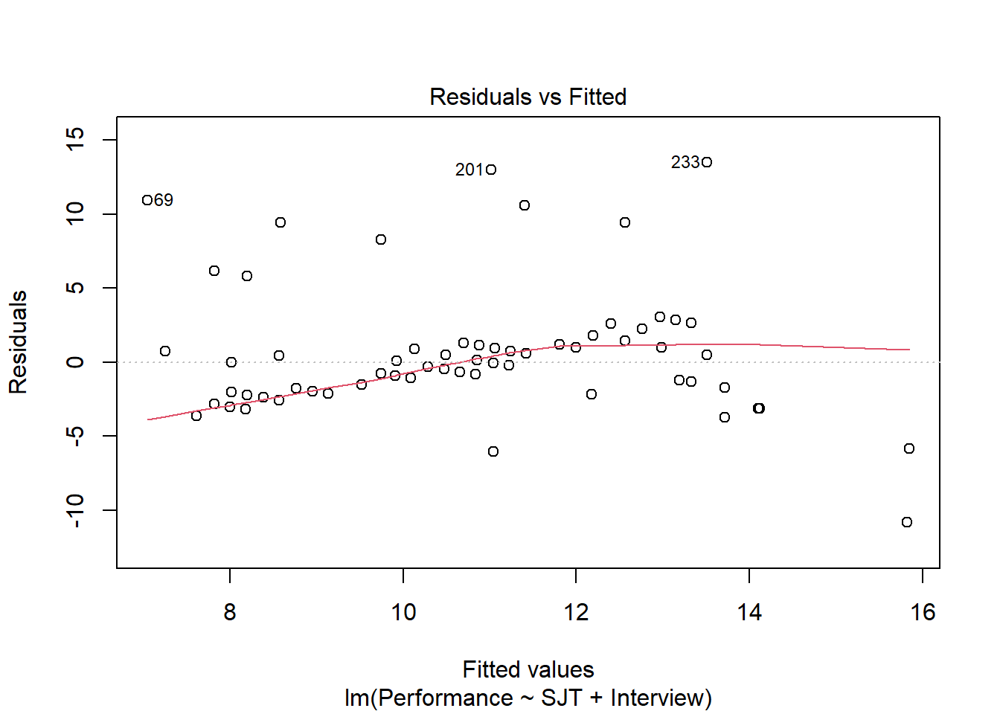
The resulting plot shows the association between the fitted values (x-axis) and the residuals (y-axis). If you recall, the residuals are the error in our estimations - or in other words, how much our fitted values for the outcome variable deviate from the observed (actual) values for the outcome variable. The term “fitted values” is another way of saying predicted values for the outcome variable, but the language “fitted” is more precise here. The horizontal dotted line is drawn at the residual value of zero; remember, our goal is to minimize the size of residuals (i.e., error). The solid line shows the deviations from zero of the residuals for each fitted value, and the greater the solid line deviates from the dotted line, the more likely that (a) variances of the residuals may not be equal for each level of the predictor variable (violation of the assumption of homoscedasticity), (b) the average residual error value may not be zero for each level of the predictor variable, and (c) there may be potential multivariate outliers influencing the fitted (predicted) values. In this plot, we can see that the variances of the residuals seem to be about equal across observations (evidence of homoscedasticity), the average residual error value appears to be about zero (which is good), and there appears to be three cases that are flagged as a potential multivariate outlier (i.e., row numbers 69, 201, and 233).
As an additional diagnostic tool, we can plot a Q-Q plot, which provides an indication as to whether the residuals are normality distributed (one of our statistical assumptions). Simply adapt the plot script from above, but this time, enter the numeral 2 (instead of 1) to request the second diagnostic plot.
# Diagnostics plot: normal Q-Q plot
plot(reg.mod2, 2)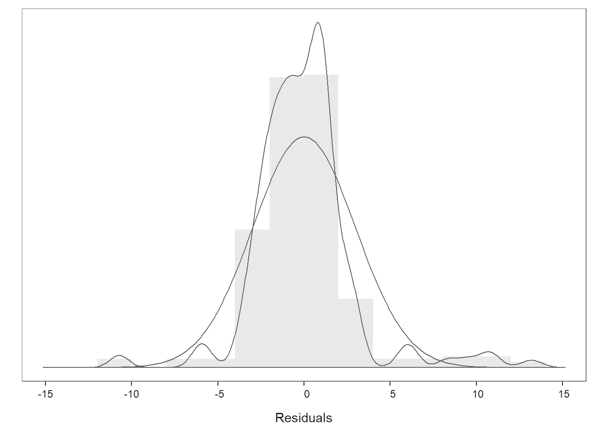
Normally distributed residuals will fall along the dotted diagonal line. As you can see, many of the residuals fall on or near the line with the exception of those three potential outlier cases that we identified in the previous plot: row numbers 69, 201, and 233. We also see some deviations from the dotted line at the low and high ends of the theoretical quantiles, which shows some departure from normality in the residuals.
As the last diagnostic plot, let’s look at Cook’s distance (D) across cases. Once again, adapt the plot script from above, but this time, enter the numeral 4 to request the fourth diagnostic plot. We’re skipping the third plot.
# Diagnostics plot: Cook's Distance plot
plot(reg.mod2, 4)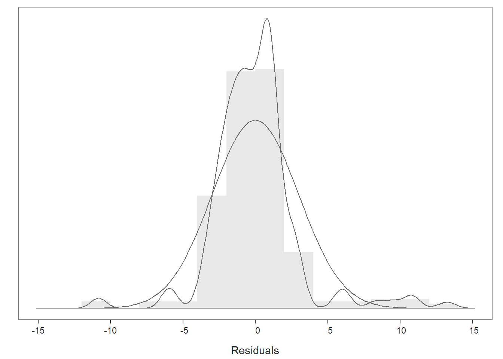
Here we see case associated with row number 201 again, but we also see cases associate with row numbers 70, 170, and 201 based on Cook’s distance.
We can also grab the cases with the highest Cook’s distances. Let’s create an object called cooksD that we will assign a vector of Cook’s distance values to using the cooks.distance function from base R. Just enter the name of the regression model object (reg.mod1) as the sole parenthetical argument. Next, update the object we called cooksD by applying the sort function from base R and entering the cooksD object as the first object and decreasing=TRUE as the second argument; this will sort the Cook’s distance values in descending order. Finally, apply the head function from base R, and as the first argument enter the name of the cooksD object that we just sorted; as the second argument, type n=20 to show the top 20 rows, as opposed to the default top 6 rows.
# Estimate Cook's distance values
cooksD <- cooks.distance(reg.mod2)
# Sort Cook's distance values in descending order
cooksD <- sort(cooksD, decreasing=TRUE)
# View top-20 Cook's distance values
head(cooksD, n=20)## 201 70 170 270 233 101 1 69
## 0.16917874 0.14329599 0.14329599 0.14329599 0.12946844 0.09214623 0.09214623 0.08140835
## 169 92 192 292 20 120 283 269
## 0.08140835 0.06114519 0.06114519 0.06114519 0.05121764 0.05121764 0.04481510 0.04456115
## 97 197 297 82
## 0.01981777 0.01981777 0.01981777 0.01656404Here we get the numeric values associated with Cook’s distances, which corroborates what we saw in the plot of Cook’s distances above. Again, the case associated with row 201 is by far the largest, and the next largest values are clustered closer together, which include the cases associated with row numbers 70, 170, and 270. There are many different rules of thumbs for what constitutes an extreme Cook’s distance value. One common approach is to determine the threshold by dividing 4 by the sample size. There is, however, an even more liberal cutoff, which is simply 1 (Bollen and Jackman 1985).
Across the three diagnostic plots and the vector of Cook’s distances, 201 appears to be consistently the most concerning case, and cases associated with row numbers 69, 70, 170, 270, and 233 may also be problematic. For the most part, the distribution of the residuals look mostly normal. As such, as a sensitivity analysis and for the sake of demonstration, we will estimate our model once more after removing the cases associated with row numbers 201, 69, 70, 170, 270, and 233 from our data frame. If you’ve completed the entire tutorial thus far, you may have noted that some of the plots we are using with the lm function are different than those that come with the Regression function from lessR (see above), and further, you may have noticed that we have flagged more potential problematic cases in using these plots than the ones for the Regression function. This goes to show, again, how thoughtful we must be with the tools that we use, and again, I recommend erring on the side of caution when it comes to removing cases for subsequent analyses. And, remember, no model will ever be perfect. For now, let’s go ahead and interpret the results of the multiple linear regression model.
Obtaining the Model Results: Type the name of the summary function from base R and include whatever you named your regression model (reg.mod1) as the sole parenthetical argument; we specified the regression model object called reg.mod2) earlier in the tutorial. The summary function simply returns a summary of your estimated regression model results.
# Get summary of multiple linear regression model results
summary(reg.mod2)##
## Call:
## lm(formula = Performance ~ SJT + Interview, data = df)
##
## Residuals:
## Min 1Q Median 3Q Max
## -10.8249 -1.5198 -0.0401 1.0396 13.4868
##
## Coefficients:
## Estimate Std. Error t value Pr(>|t|)
## (Intercept) 5.52654 0.53925 10.249 < 0.0000000000000002 ***
## SJT 0.56748 0.08453 6.714 0.0000000000964 ***
## Interview 0.38530 0.06388 6.031 0.0000000048298 ***
## ---
## Signif. codes: 0 '***' 0.001 '**' 0.01 '*' 0.05 '.' 0.1 ' ' 1
##
## Residual standard error: 2.992 on 297 degrees of freedom
## Multiple R-squared: 0.2643, Adjusted R-squared: 0.2593
## F-statistic: 53.34 on 2 and 297 DF, p-value: < 0.00000000000000022The output first displays the model you specified, followed by descriptive statistics about the residuals (i.e., estimation errors). The table called Coefficients contains the estimated regression model, including the regression coefficients (slopes, weights) and their standard errors, t-values, and p-values. Typically, the intercept value and its significance test are not of interest, unless we wish to use the value to specify the regression model equation (which we do later in this tutorial). The estimate of the regression coefficients for the predictor variables in relation to the outcome variable are often of substantive interest. Here, we see that the unstandardized regression coefficient for SJT is .567, and its associated p-value is less than .001 (b = .567, p < .001). Given that the p-value is less than our conventional two-tailed alpha level of .05, we reject the null hypothesis that the regression coefficient is equal to zero, which means that we conclude that the regression coefficient is statistically significantly different from zero. We can interpret the significant regression coefficient as follows: Controlling for the effects of Interview, for every one point increase in SJT, Performance increases by .567 points Let’s move on to the regression coefficient for Interview, which is statistically significant and positive too (b = .385, p < .001). Because these two regression coefficients are unstandardized, it would not be appropriate to compare their magnitudes. We can interpret the significant regression coefficient as follows: Controlling for the effects of SJT, for every one point increase in Interview, Performance increases by .385 points.
Using the intercept and predictor variable coefficient estimates, we can write out the equation for the regression model as follows:
\(Performance_{predicted} = 5.527 + (.567 * SJT_{observed}) + (.385 * Interview_{observed})\)
If we plug in, for example, the value 6 as an observed value of SJT and the value 7 as an observed value of Interview, then we get 11.624, as shown below:
\(11.624 = 5.527 + (.567 * 6) + (.385 * 7)\)
Thus, we are able to predict future values of Performance based on our estimated regression model.
Below the table containing the regression coefficient estimates, the (unadjusted multiple) R-squared (R2) and adjusted R2 values appear, which are indicators of the model’s fit to the data as well as the extent to which the predictor variables collectively explain variability in the outcome variable. First, the (multiple) R-squared (R2) value of .264 indicates the extent to which the predictor variable explains variance in the outcome variable in this sample - or in other words, how much errors are minimized in the sample given the specified model; if you multiply the value by 100, you get a percentage. In this case, we find that 26.4% of the variance in Performance is explained by SJT. This raw, unadjusted R-squared (R2) value, however, is sensitive to the sample size and the number of predictor variables in the model. The adjusted R2 value corrects for the sample size relative to the number of predictor variables in the model, which results in a lower estimate than its unadjusted counterpart. The adjusted R2 is a better indicator of the magnitude of the association in the underlying population and thus tends to be more accurate. Here we see that the adjusted R2 value is slightly smaller at .259 (or 25.9%). Typically, it’s a good idea to report both values.
The table containing the sum of squares, F-values, and p-values includes detailed information about overall model fit, which was estimated using ordinary least squares (OLS), as described earlier in this tutorial. In this table, we are mostly interested in the F-value associated with the overall model and its associated p-value, as it indicates whether the estimated model fits the data significantly better than the null model, where the null model does not include any predictor variables. In other words, the F-value and p-value are associated with the R2 value and whether the unadjusted and adjusted R2 values are significantly different from zero. In this example, we see that the F-value is 53.733 and its associated p-value is less than .001, the latter of which is less than our conventional alpha level of .05. Thus, we reject the null hypothesis that the R2 values are equal to zero, which leads us to conclude that the estimated model outperforms a model with no predictor variables. You can think of the R2 values as indicators of effect size at the model level. I provide some rules of thumb for qualitatively interpreting the magnitude of the effect size, which is another way of saying “determining the level of practical significance” (see table below). As you can see, our statistically significant unadjusted and adjusted R2 value can both be described as large by conventional standards. Thus, we seem to have a good model here.
| R2 | Description |
|---|---|
| .01 | Small |
| .09 | Medium |
| .25 | Large |
To estimate the 95% confidence intervals, we can apply the confint function from base R, and enter the name of the regression model (reg.mod1) as the sole argument.
# Estimate 95% confidence intervals
confint(reg.mod2)## 2.5 % 97.5 %
## (Intercept) 4.4652963 6.5877787
## SJT 0.4011348 0.7338281
## Interview 0.2595753 0.5110242The 95% confidence interval for the SJT regression coefficient ranges from .401 to .734 (i.e., 95% CI[.401, .734]), which indicates that the true population parameter for association likely falls somewhere between those two values. The 95% confidence interval for the Interview regression coefficient ranges from .260 to .511. (i.e., 95% CI[.260, .511.]).
As a direct indicator of the effect size (practical significance), we can calculate the zero-order (Pearson product-moment) correlations between SJT and Performance and between Interview and Performance. Keep the method="pearson" as is to request a Pearson product-moment correlation, and be sure to include the name of the data frame object (df) followed by the $ operator in front of each variable.
# Estimate zero-order correlations (effect sizes)
cor(df$SJT, df$Performance, method="pearson")## [1] 0.4173192cor(df$Interview, df$Performance, method="pearson")## [1] 0.3906502The correlation coefficients between SJT and Performance and between Interview and Performance are medium-large in magnitude (r = .42 and r = .39, respectively), which indicates a moderate-strong, positive, effects for each of these selection tools with respect to Performance.
| r | Description |
|---|---|
| .10 | Small |
| .30 | Medium |
| .50 | Large |
Sample Technical Write-Up of Results: A concurrent validation study was conducted to evaluate whether evidence of incremental validities existed for a situational judgment test (SJT), an emotional intelligence assessment (EI), and a structured interview (Interview) in relation to job performance (Performance). An initial multiple linear regression model was estimated with all three selection tools included as predictor variables and job performance specified as the criterion (i.e., outcome) variable. Due to very high collinearity (i.e., a very high correlation) associated with the situational judgment test and the emotional intelligence assessment, we made the decision to drop the emotional intelligence assessment, as it was more expensive to administer and overlapped with the situational judgment test in terms of assessed content. In a follow-up multiple linear regression model, only the situational judgment test and structured interview variables were included as predictor variables. In this model, we found that each of the these selection tools showed evidence of incremental validity in relation to the criterion of job performance. Specifically, when statistically controlling for the effect of structure interview scores, model results indicated that scores on the situational judgment test were positively associated with job performance scores and to a statistically significant extent (b = .567, p < .001). In other words, controlling for the effect of the structured interview, for every one point increase in situational judgment test scores, job performance increased by .567 points. Further, when statistically controlling for the effect of situational judgment test scores, model results indicated that scores on the structured interview were positively associated with job performance scores and to a statistically significant extent (b = .385, p < .001). In other words, controlling for the effect of the situational judgment test, for every one point increase in structured interview scores, job performance increased by .385 points. Collectively, scores on the situational judgment test and the structured interview explained 26.4% of the variance in the criterion of job performance (R2 = .264), which can be described as a large amount of variance explained by the model. In sum, of the three selection tools, the situational judgment test and the structured interview showed the most promise, as they showed acceptable levels of collinearity and evidence of incremental validity with respect to the criterion.
Obtaining Standardized Coefficients: If you would like to estimate the same multiple linear regression model but view the standardized regression coefficients, just do some small tweaks to the lm code/script that we specified above. First, let’s name the model something different given that it will include standardized coefficients; here, I decided to name the model st_reg.mod2. Next, within the lm function, apply the scale function from base R to the predictor and outcome variables as shown; doing so will standardize our variables and center them around zero.
# Estimate multiple linear regression model
# with standardized coefficient estimates
st_reg.mod2 <- lm(scale(Performance) ~ scale(SJT) + scale(Interview), data=df)
summary(st_reg.mod2)##
## Call:
## lm(formula = scale(Performance) ~ scale(SJT) + scale(Interview),
## data = df)
##
## Residuals:
## Min 1Q Median 3Q Max
## -3.1135 -0.4371 -0.0115 0.2990 3.8792
##
## Coefficients:
## Estimate Std. Error t value Pr(>|t|)
## (Intercept) -0.000000000000000002772 0.049688712929418260567 0.000 1
## scale(SJT) 0.343978856791380960267 0.051235702957663491197 6.714 0.0000000000964 ***
## scale(Interview) 0.309010486383703486535 0.051235702957663539769 6.031 0.0000000048298 ***
## ---
## Signif. codes: 0 '***' 0.001 '**' 0.01 '*' 0.05 '.' 0.1 ' ' 1
##
## Residual standard error: 0.8606 on 297 degrees of freedom
## Multiple R-squared: 0.2643, Adjusted R-squared: 0.2593
## F-statistic: 53.34 on 2 and 297 DF, p-value: < 0.00000000000000022In the Coefficients portion of the output, note that the intercept value is virtually zeroed out due to the standardization, and the regression coefficients associated with SJT and Interview are now in standardized units (\(\beta\) = .340, p < .001 and \(\beta\) = .309, p < .001, respectively). The reason that the intercept value is not exactly zero (in scientific notation) is rounding error. Note that the p-value is the same as the unstandardized regression coefficient we saw above. The interpretation of this statistically significant standardized regression coefficient is as follows: When controlling for Interview, for every one standardized unit increase in SJT, Performance increases by .344 standardized units, and when controlling for SJT, for every one standardized unit increase in Interview, Performance increases by .309 standardized units.
Dealing with Multivariate Outliers: If you recall above, we found that the case associated with row numbers 201, 70, 270, and 170 in this sample may be candidates for removal. I tend to be quite wary of eliminating cases that are members of the population of interest and who seem to have plausible data (i.e., cleaned). As such, I am typically reluctant to jettison cases, unless the cases appear to have a dramatic influence on the estimated regression line. Some might argue that we should retain cases with row numbers 201, 70, 270, and 170, and others might argue that we should remove them; really, it comes down to your own logic, rationale, and justification, and I recommend pulling in other information you might have about these cases (even beyond data contained in this dataset) to inform your decision. If you were to decide to remove these cases, here’s what you would do. First, look at the data frame (using the View function) and determine which cases row number 201, 70, 270, and 170 are associated with; because we have a unique identifier variable (ID) in our data frame, we can see that row numbers 201, 70, 270, and 170 in our data frame are associated with EmployeeIDs EE223, EE92, EE292, and EE192, respectively. Next, with respect to estimating the regression model, I suggest naming the unstandardized regression model something different, and here I name it reg.mod3. The model should be specified just as it was earlier in the tutorial, but now let’s add an additional argument: subset=(!EmployeeID %in% c("EE223", "EE92", "EE292", "EE192")); the subset argument subsets the data frame within the lm function by whatever logical/conditional statement you provide. In this instance, we indicate that we want to retain every case in which EmployeeID is not equal to EE223, EE92, EE292, and EE192. Remember, the logical operator ! means “not” and the %in% operator means “within”. Revisit the chapter on filtering data if you want to see the full list of logical operators and more information on removing multiple cases.
# Estimate multiple linear regression model
# but remove row numbers 201, 70, 270, and 170
# which correspond to EmployeeID numbers of
# EE223, EE92, EE292, and EE192
reg.mod3 <- lm(Performance ~ SJT + Interview, data=df,
subset=(!EmployeeID %in% c("EE223", "EE92", "EE292", "EE192")))
summary(reg.mod3)##
## Call:
## lm(formula = Performance ~ SJT + Interview, data = df, subset = (!EmployeeID %in%
## c("EE223", "EE92", "EE292", "EE192")))
##
## Residuals:
## Min 1Q Median 3Q Max
## -7.1832 -1.2913 -0.0509 0.8278 13.1206
##
## Coefficients:
## Estimate Std. Error t value Pr(>|t|)
## (Intercept) 4.70328 0.49639 9.475 < 0.0000000000000002 ***
## SJT 0.61531 0.07723 7.968 0.000000000000036184 ***
## Interview 0.50383 0.05873 8.579 0.000000000000000567 ***
## ---
## Signif. codes: 0 '***' 0.001 '**' 0.01 '*' 0.05 '.' 0.1 ' ' 1
##
## Residual standard error: 2.677 on 293 degrees of freedom
## Multiple R-squared: 0.371, Adjusted R-squared: 0.3667
## F-statistic: 86.41 on 2 and 293 DF, p-value: < 0.00000000000000022The pattern of results remains mostly the same; however, the model fit (as evidenced R2) improved after removing these outliers. Even with an improved model fit, We should remain hesitant to use the model based on the reduced sample (without these multivariate outliers), as this could potentially hurt our ability to generalize our findings to future samples of applicants. Then again, if the outlier cases really to do seem to be atypical for the population of interest, then you might make a case for removing them. Basically, it’s up to you to justify your decision and document it.
If your data frame does not have a unique identifier variable, you could remove the outlier by referencing the outlier by row number. Instead of using the subset= argument, you would follow up your data=df argument with [-c(201, 70, 270, 170),] to indicate that you wish to remove row numbers 201, 70, 270, and 170. The minus sign (-) signals “not.”
# Estimate multiple linear regression model
# but remove row numbers 201, 70, 270, and 170
reg.mod3 <- lm(Performance ~ SJT + Interview, data=df[-c(201, 70, 270, 170),])
summary(reg.mod3)##
## Call:
## lm(formula = Performance ~ SJT + Interview, data = df[-c(201,
## 70, 270, 170), ])
##
## Residuals:
## Min 1Q Median 3Q Max
## -7.1832 -1.2913 -0.0509 0.8278 13.1206
##
## Coefficients:
## Estimate Std. Error t value Pr(>|t|)
## (Intercept) 4.70328 0.49639 9.475 < 0.0000000000000002 ***
## SJT 0.61531 0.07723 7.968 0.000000000000036184 ***
## Interview 0.50383 0.05873 8.579 0.000000000000000567 ***
## ---
## Signif. codes: 0 '***' 0.001 '**' 0.01 '*' 0.05 '.' 0.1 ' ' 1
##
## Residual standard error: 2.677 on 293 degrees of freedom
## Multiple R-squared: 0.371, Adjusted R-squared: 0.3667
## F-statistic: 86.41 on 2 and 293 DF, p-value: < 0.0000000000000002239.3.4 APA-Style Results Table
If you want to present the results of your multiple linear regression to a more statistically inclined audience, particularly an audience that prefers American Psychological Association (APA) style, consider using functions from the apaTables package.
Using the lm function from base R, as we did above, let’s begin by estimating a multiple linear regression model and naming the model object (reg.mod1).
# Estimate multiple linear regression model
reg.mod1 <- lm(Performance ~ SJT + Interview, data=df)If you haven’t already, install and access the apaTables package using the install.packages and library functions, respectively.
# Install package
install.packages("apaTables")# Access package
library(apaTables)The apa.reg.table function from apaTables is pretty straightforward. Simply enter your regression model object (reg.mod1) as the sole parenthetical argument. This will generate a table as output in your Console.
# Create APA-style regression table
apa.reg.table(reg.mod1)##
##
## Regression results using Performance as the criterion
##
##
## Predictor b b_95%_CI beta beta_95%_CI sr2 sr2_95%_CI r Fit
## (Intercept) 5.53** [4.47, 6.59]
## SJT 0.57** [0.40, 0.73] 0.34 [0.24, 0.44] .11 [.05, .17] .42**
## Interview 0.39** [0.26, 0.51] 0.31 [0.21, 0.41] .09 [.03, .15] .39**
## R2 = .264**
## 95% CI[.18,.34]
##
##
## Note. A significant b-weight indicates the beta-weight and semi-partial correlation are also significant.
## b represents unstandardized regression weights. beta indicates the standardized regression weights.
## sr2 represents the semi-partial correlation squared. r represents the zero-order correlation.
## Square brackets are used to enclose the lower and upper limits of a confidence interval.
## * indicates p < .05. ** indicates p < .01.
## If we add a filename= as a second argument, we can specify the name of a .doc file that we can write to our working directory. Here, I name the file “APA Multiple Linear Regression Table.doc”. The .doc file that appears in your working directory will be nicely formatted and include critical regression model results in an organized manner.
# Create APA-style regression table and write to working directory
apa.reg.table(reg.mod1, filename="APA Multiple Linear Regression Table.doc")##
##
## Regression results using Performance as the criterion
##
##
## Predictor b b_95%_CI beta beta_95%_CI sr2 sr2_95%_CI r Fit
## (Intercept) 5.53** [4.47, 6.59]
## SJT 0.57** [0.40, 0.73] 0.34 [0.24, 0.44] .11 [.05, .17] .42**
## Interview 0.39** [0.26, 0.51] 0.31 [0.21, 0.41] .09 [.03, .15] .39**
## R2 = .264**
## 95% CI[.18,.34]
##
##
## Note. A significant b-weight indicates the beta-weight and semi-partial correlation are also significant.
## b represents unstandardized regression weights. beta indicates the standardized regression weights.
## sr2 represents the semi-partial correlation squared. r represents the zero-order correlation.
## Square brackets are used to enclose the lower and upper limits of a confidence interval.
## * indicates p < .05. ** indicates p < .01.
## The apa.reg.table function from the apaTables package can table multiple linear regression model results in a manner that is consistent with the American Psychological Association (APA) style guide. APA-style tables are useful when presenting to academic audiences or audiences with high levels of technical/statistical expertise.